2022-13¶
开卷故事¶
邻居，你好啊¶
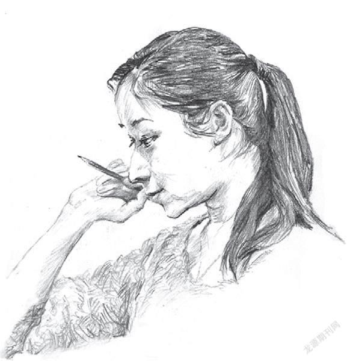
丁娴瑶
最近，我交了个新朋友。她叫小楠，性格直爽，乐于助人。我俩聊天，她忍不住“吐槽”起对门邻居：“特殊时期，做核酸都没见他人！”这哪能忍？于是小楠做核酸前，总去对面“砸”门，可始终无人回应。她气得打电话到居委会投诉，居委会估计也是忙得焦头烂额，只说会尽快核查，但看起来一时难有回复。
说起邻居呢，我心里也有话说。这段时间，楼里有人总踩着一双高跟凉拖，整天上上下下的，“啪嗒啪嗒”踩得楼梯震天响。封控期间本就该减少出户，这人如此不安分，给人心里添堵！那天，我清楚地听到那人又“啪嗒啪嗒”地经过我家门口，便气势汹汹地开门打算理论几句。没想到门一开，一位姑娘笑脸相迎：“邻居，你好啊！第一次团购吧？给，菜来啦！”我这才知道，她是我们楼里负责对接团购物资的志愿者。为了减少楼道里人群聚集，她坚持一个人把所有物资分送到每家每户。为此，她每天都需要楼上楼下地跑好几遍！姑娘说：“要不是临时被封在婆婆家没鞋换，不然我干活还能更利索！”我心里惭愧，差点错怪了好邻居！
说回小楠吧。随着小区进入“足不出户”的静默期，她遇上了难题：她的摄影工作，急需胶卷。这年头，胶卷可算是稀罕物。小楠趁着做核酸时，问了好几个邻居，大家都没有。可让她万分意外的是，过了一晚上，她家门口竟有一盒胶卷从天而降！我都好奇了：“不是都‘足不出户了吗，还有谁能‘来去自如，给你雪中送炭？”
小楠激动地说道：“是他呀！我的对门！”原来，居委会来电回复了，她的对门邻居小罗，是小区里最早的一批志愿者，每天早出晚归地奋战在一线。小楠所在楼里的核酸检测，就是他负责采样的。那天，小楠在排队做核酸时向邻居们讨要胶卷的事，小罗自然也听到了。他是个摄影爱好者，那盒胶卷算是他的珍藏。
“难怪每次做核酸都不见他人影，没想到他就是那個‘大白！以后可得多找他交流摄影！”小楠一边高兴地说着，一边把新到的一批团购蔬菜递给我，然后她踩着那双高跟凉拖上楼，去送下一家……没错，小楠就是我那个“不安分”的邻居。
我听到小楠敲响了小罗家的门，也再一次听到这段时间以来，那句常常温暖我的话：“邻居，你好啊……”
（插图：丁德武）
笑话¶
吃火锅
大刚为人憨厚、直爽。这天，他女友的父母从农村来城里。大刚听说二老从来没吃过火锅，就特地带他们去火锅店尝尝。
上菜了，大刚发现二老坐在那儿一直不敢动筷。他一着急，赶紧站起来招呼道：“叔叔阿姨，千万别拘束，吃火锅也就那么回事，就像你们在农村喂猪，把那些菜呀、肉呀倒槽子里，拱到啥算啥！”
（小 娃）
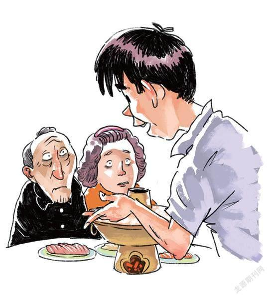
单独约会
有个小伙子兴冲冲地对女友说：“我买了三张电影票。”
女友不解：“咱们两个人，你买三张票干什么？”
小伙子解释道：“三张票，一张给你爸，一张给你妈，还有一张给你姐。这样，我们就可以单独约会啦！”
（潘光贤）
说好话
小李带女友回老家，走到家门口时，见前面有个豆腐摊。小李想，那豆腐摊的老板娘是看着他从小长大的，肯定会帮他说好话，于是他就带着女友过去打招呼。
没想到，老板娘对小李的女友说了一句：“姑娘，这小伙子聪明啊，是从小吃我的豆腐长大的！”
（橙 木）
遇伯乐
甲说：“这次跳槽到新公司，我遇到了伯乐！”
乙说：“好事啊，提拔你了？”
甲说：“没有！”
乙说：“为啥？”
甲说：“那伯乐说——‘我相了这么多年马，还是第一次碰到有驴混进来！”
（伯 仲）
垃圾清理
小芳的电脑内存不足，运行起来十分卡顿。她请邻居帮忙修理，邻居看了以后，问道：“你从来都没有清空过‘垃圾箱吗？”
“没有。”小芳说，“这种脏活儿都是我老公干的。”
（中 泽）
得意忘形
阿刘以前干过些偷鸡摸狗的勾当，后来改邪归正了，也交了女友。这天，他陪未来的老丈人逛街，偶遇一群社区宣传员，在街头
演示各种偷摸术。老丈人看得眼花缭乱，不明所以。阿刘便在一旁口若悬河地讲解，讲得老丈人忍不住问道：“你咋懂这么多呢？”
阿刘一得意，说道：“也没啥，内行看门道嘛！”
（紫糯米）
童言童语
小刘跟女友逛街，有个小孩跑过来问他：“叔叔，我跟妈妈走散了，能借你的手机用一下吗？”
小刘掏出手机递给小孩，笑着说：“叫哥哥就可以了，否则我女朋友会嫌弃我的。”
小刘的女友被逗乐了，在一旁笑个不停。这时，小孩又说：“原来哥哥有女朋友了啊，怪不得你妈妈笑得这么开心！”
（北 山）
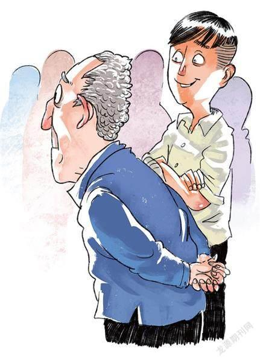
看电影
汉斯是一家电影院的经理，但他这个人十分抠门，每次去隔壁餐厅吃饭，都不付现金，而是拿出几张电影票抵账。
这天，汉斯又来到餐厅，点了一份炒鸡蛋，餐厅老板却说暂时没有鸡蛋。
汉斯生气地说：“你这开餐厅的，怎么会没有鸡蛋呢？”
老板白了汉斯一眼，说：“鸡都看电影去了，哪还有闲工夫下蛋！”
（丫 头）
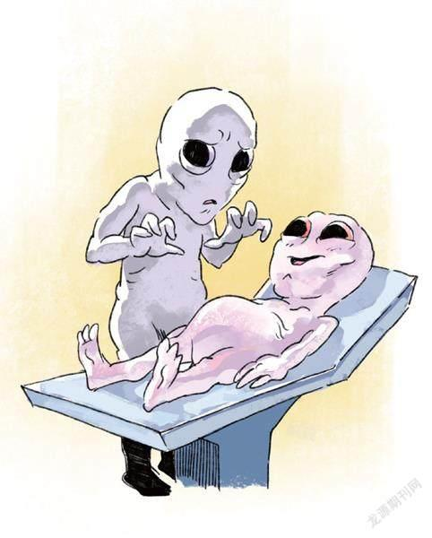
收骨頭
有个主人十分吝啬，每顿饭都会吃个一干二净，只给他的仆人留下一碗吃剩的骨头。于是，仆人当着主人的面对天祈祷：“愿相公活一百岁，小的比相公多活一天！”
主人听了，问仆人什么意思。仆人说：“小人多活一天，好收拾相公的骨头啊！”
（鼓 点）
为啥不进去
警员报告说：“那个罪犯被我追得走投无路，逃进局长家里了。”
警长问：“你为啥不跟着进去？”
警员说：“我两手空空的，不好意思到领导家里去。”
（吉米粒）
医生的建议
有个外星人心脏碎了一块，想找医生修补。医生看了后，说：“伤得太厉害了，没法补，还是取了吧！”手术进行到一半，医生又建议道：“要不，把肺也取了吧！”外星人问：“怎么啦？”医生说：“过日子嘛，没心没肺的，可能活得更长久！”
外星人说：“那干脆把肠肚一块儿掏了吧，省得牵肠挂肚了……”
（小 娃）
最懒一等奖
有个小镇，搞了一个“最懒之人”的比赛。发奖的时候，一等奖得主约翰没来现场，主办方就派了工作人员把奖品送到他家里去。
工作人员来到约翰的家门口，发现他竟然在一棵树上。工作人员感叹道：“看你也不懒啊，能爬这么高的树！”
约翰说：“还不是因为当年我躺在草地上睡觉，一阵风把一粒树的种子，吹到了我身下！”
（秦 好）
领导签字
一次，小张的差旅报销单需要公司大领导签字，可是大领导出差了，他就找部门经理签了字。
公司出纳看了小张的报销单，说：“你怎么是找经理签字的？”
小张无奈地说：“大领导不在，经理签的不行吗？反正都是领导嘛！”
出纳意味深长地看着小张，说道：“你听我说，不是每种牛奶都叫特仑苏啊……”
（紫荆星）
慢的定义
马丁是个慢性子，做什么事都非常慢。他求职一直不顺利，最近好不容易在动物园找到一份看管乌龟的工作。
这天，老板发现马丁站在空围栏旁发呆，便问他：“乌龟都去哪儿了？”
“我简直不敢相信，”马丁说，“我刚打开门，然后一转身，那些乌龟就都不见了……”
（田龙华）
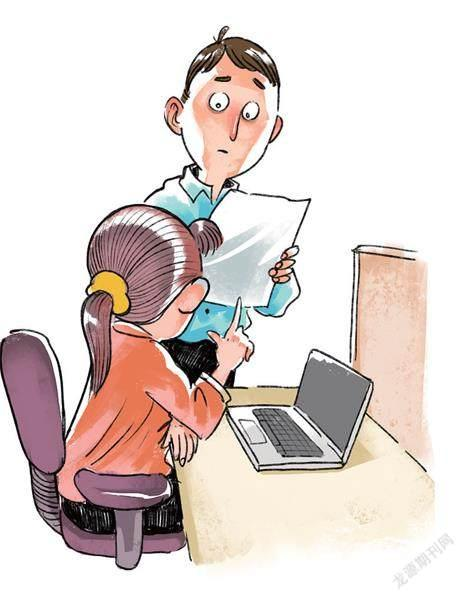
新传说¶
冰出溜¶
司健安
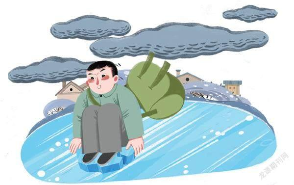
几十年前的冬天，好像特别冷。村口水塘里的冰，常常冻得很厚。每到晴天，都有不少人玩“冰出溜”。
小石头这孩子调皮，他弄了一块差不多要有砖头那样厚的冰块，一只脚踩在上面，另一只脚用力蹬着加速助跑。等到了一定的速度后，再两只脚都站在冰块上，“哧溜”一下，能滑好远。那块比书包稍微大一点的冰块，功能就像现在的滑板。这种玩法刺激，也危险。小石头的家里人，可不让他这样玩，平时都是他三姐用简易的冰车，拉着他玩的。
小石头有三个姐姐，大姐和二姐都出嫁了，没有出嫁的三姐，比他大整整十岁。一家人拿小石头当宝贝疙瘩，疼得很。
今天，小石头的三姐没来陪他，她正在家里哭呢！她关上门，不吃不喝，哭了一天一夜，谁都不让进，谁劝都不听。
三姐最疼小石头，看着三姐哭，小石头心里不好受。别的小朋友都走了，他还不回去，一个人在那里踩着厚冰块，一会儿出溜到水塘的这头，一会儿出溜到水塘的那头。他一边滑，一边想着咋能帮帮三姐，让三姐不再哭。
三姐处了一个男朋友，叫大牛，和他们家一个村的。两家住得不算远，但家里的大人平时往来不多。三姐和大牛上中学时就认识了，两人一直要好。本以为是水到渠成的事，可谁知道，大牛娘找媒人去小石头家提亲的时候，石头娘说啥也不同意。理由说出来挺可笑：前一阵子，大牛家临时来客人，大牛娘想跟邻居借几个鸡蛋。不巧附近几家邻居都没有现成的，最后还是石头娘借了她十个鸡蛋。没过几天，大牛娘用围裙包着一兜鸡蛋过来还。当时，石头娘正在和面呢，腾不开手。大牛娘也着急回家做饭，就把鸡蛋放在石头家窗台下的竹篮里，匆匆忙忙地走了。石头娘吃罢饭，才想起鸡蛋的事，便拿个瓢去收鸡蛋，一边收，一边数——竟然少了一个！
少一个鸡蛋不算啥，但是，要是想让自家闺女嫁给这样的人家，石头娘坚决不答应。石头的大姐和二姐，遇到的都是会算计、爱占小便宜的婆婆，俩闺女嫁过去以后，都没少受气，日子总是过得别别扭扭的。现在，自己的小闺女，说啥也不能再找连个鸡蛋的便宜都看在眼里的婆婆。
虽然大牛爹、大牛娘平时在村里的口碑还算不错，可是这次鸡蛋的事，让石头娘膈应，心里就是过不去这个坎儿。因此，石头爹以在外面做生意早就给三妞找好了婆家为借口，回绝了媒人。
大牛娘也是爱面子的人，怎么会甘心落个爱占便宜的坏名声？再者，当时她明明数了，不多不少，正好是十个鸡蛋，而且她怕亏了石头娘，还专门挑了十个大点的。于是，两人各说各的理，又都没有证据，闹得不欢而散。
石头爹常年不在家，家里的事都是石头娘说了算。三姐再怎么跟娘央求，娘就是不答應。三姐没办法，气得光哭。
村里可不是只有小石头自己这样玩冰出溜，他是跟大孩子们学的，要不然那么厚的冰面，他一个小孩子，砸不透。那些大孩子破了冰，在冰面上会留下断口，小石头是顺着断口，掰下了那块大冰。
冰被取走之后，冰面上就留下了一个方桌大小的窟窿。
小石头滑着滑着，不知怎么，越滑越快，惯性大了，他竟一路尖叫着滑进了冰窟窿。大冬天的，身上都是厚厚的棉衣，棉衣湿了水，沉得厉害。小石头扒着冰面，想往上爬，越折腾，棉衣越重，裹着身子往水底沉……
危急时刻，一个身影冲了过来，“扑通”一声跳进冰窟窿，把小石头救了出来。
救小石头的，是大牛。
小石头挨了冻，又受了惊吓，当天夜里就发烧了。石头娘和他三姐连夜用架子车拉着小石头，去了乡里的卫生所。石头爹听说后，生意也不做了，马上就从县里赶了回来。
救了小石头，相当于救了他们一家人的命。小石头出院以后，石头爹把家里的猪卖了，备下厚礼，找媒人去大牛家提亲。不但提亲，石头娘还去给大牛娘赔礼道歉。在医院里，小石头跟爹承认了，鸡蛋是他偷偷拿去喝了。他看小人书里，八路军的伤员养病，老百姓都是给他们喝生鸡蛋，说那样有营养。他想尝尝好喝不好喝……
三姐的亲事，就这样成了。
这天黄昏时，小石头躺在床上，三姐坐在床边陪着他。看着还没好利索的小石头，三姐又是高兴，又是心疼。三姐摸着小石头的额头，问他：“弟，给姐说，你是不是给爹说瞎话了？”
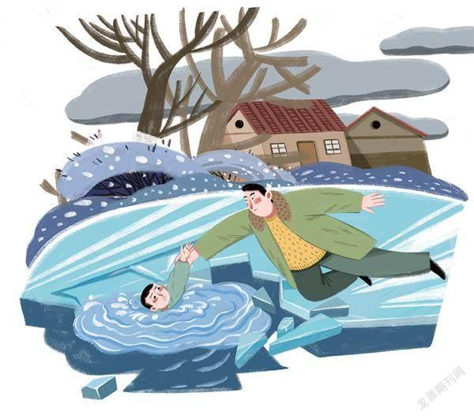
小石头瞪着大眼睛，摇摇头。
三姐一脸严肃地说：“你还不承认。你平时就不爱吃鸡蛋，说一吃鸡蛋，手臂上就冒疹子。平时爹给你煮鸡蛋，你都偷偷塞给我。你大牛哥他娘送来的鸡蛋，你没有偷喝，对不对？”
小石头扭着头想了好一阵子，才犹犹豫豫地说：“三姐，我看你哭，心里难受。”三姐一听，眼泪“唰”地流了下来，她一边哭一边说：“那也不能说瞎话！咱们一家都指着你过呢，你要是因为这事学坏，姐宁愿一辈子不嫁人！”
小石头握着三姐的手说：“三姐，我保证以后再不说瞎话了。”
三姐听小石头这样说，又追问道：“你还说过别的瞎话吗？”
小石头没吭声。
三姐装作生气，说：“你要不告诉我，姐以后就不疼你了。”
小石头吭哧了半天，说：“那你答应我，别给咱爹咱娘说。”
三姐看小石头真被她唬住了，答应道：“好，姐保证不说。”
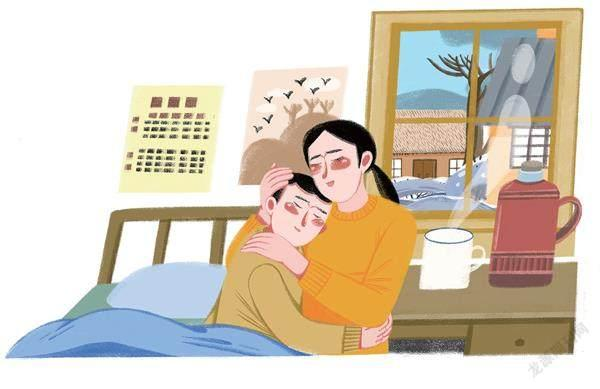
小石头趴在三姐的耳边，低声说：“其实，我是故意滑到冰窟窿旁边的。我看见大牛哥在他家门口站着，专门滑过去的。我想假装要掉进冰窟窿里，让大牛哥救我。他救了我，娘就会答应你们的亲事了。还有，我也想看看，大牛哥会不会像你那样对我好。”
“你……你个屁孩子！”听小石头说完这些，三姐气得扬起巴掌，要打小石头，巴掌扬了几扬，都没往下落，却一把将小石头抱住了。三姐的眼泪“扑簌簌”地滚落下来，一边哭，一边在小石头的后背上，使劲儿拍了几下。
“挨了打”的小石头，咧着嘴，“嘿嘿”地笑了。
三姐嗔怪道：“笑个屁啊，差点把小命搭进去你知道不知道？”
想起当时的情景，小石头似乎还有些后怕，他止住笑，说：“我就是想着趴在冰窟窿边上，吓唬吓唬大牛哥，谁知道那块冰‘咔嚓一下子裂了。要不然，我也不能掉下去。姐，我再也不敢了，我保证以后连水塘边都不去。在水里扑腾的时候，我想着我真的要死了，再也见不到爹娘了，再也见不到大姐、二姐，还有你了。”说着说着，小石头猛然间哭了起来，哭得“哇哇”响……
（发稿编辑：丁娴瑶）
（题图、插图：孙小片）
上门喂猫¶
宁莎鸥
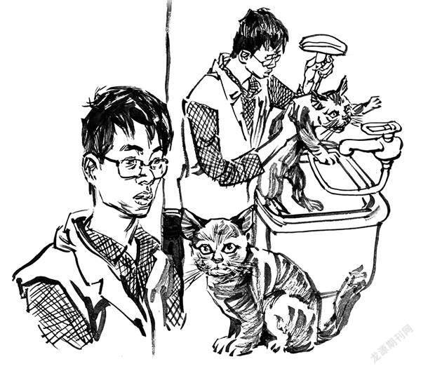
年轻小伙子蒋祥是“喂宠人”中的新成员，他平时利用节假日在线接单，各处奔走，帮忙喂食“毛孩子”们。因为他服务好，收费合理，口碑不错，客户越来越多。
临近国庆，有个叫“淼淼”的姑娘给蒋祥留言，说她趁假期要出去玩几天，请蒋祥照顾好她的宠物猫“小咪”。
蒋祥热情地回道：“放心吧，没问题！”
淼淼住的是个高档小区，蒋祥进电梯时，同乘的大爷好奇地看看他，问道：“小伙子，以前没见过你啊……”
蒋祥答道：“我找朋友。”
大爺看蒋祥按了“10”楼的按钮，便一脸狐疑地问：“10楼的，好像出去了吧？还有人在家？”蒋祥笑笑，没有解释。出电梯时，大爷还不放心地探出头来张望。
蒋祥有些无奈，这种情况他也不是第一次遇到了。
淼淼家是智能门锁，所以不用留钥匙，按个密码就能进门了。她的宠物小咪是个惹事精，见到生人就喜欢“躲猫猫”，得满房间地去找。好在淼淼知道自家宠物的脾性，大度地告知蒋祥，只要把小咪照顾好，没有房间不能进，没有东西不能用。蒋祥翻箱倒柜，终于在衣橱里拖出了躲藏的小咪。
这次，淼淼定制的服务包括给宠物洗澡。这是蒋祥接的第一单“洗澡”任务，加上小咪顽皮得很，像是有意欺负新手似的，张牙舞爪，不但泼了蒋祥一脸的水，还险些把他的脸抓破。蒋祥狼狈不堪，只好翻出茶几抽屉里的指甲钳，将小咪锋利的猫爪子修剪了一下。
把猫毛吹干也颇费周折，光是在淼淼凌乱的房间里找到吹风机，就费了蒋祥不少时间，最后还是在电脑桌后面找到的。然后，他把一张小板凳像笼子一样扣在小咪身上，才让它不乱动，勉强吹干。
没想到小咪经这么一折腾，似乎很生气，居然从玄关的窗口跳到楼道，跑了。等蒋祥追出去时，猫早就一溜烟地跑到楼上去了。
蒋祥正打算穿好鞋去追，电梯口突然出现一位中年妇女，把他堵在半路，张口说道：“幸好老街坊提醒我，家里可能进贼了！要不是我住得近，还真让你跑了呢！”
看面相，蒋祥估摸着来人应该是淼淼的妈妈。蒋祥忙解释自己不是贼，而是淼淼的朋友。为自证清白，他还打通了淼淼的语音通话。淼淼让蒋祥把手机递给老妈，也不知她说了什么，解释半天后，手机才回到蒋祥手里。
淼淼在电话里对蒋祥说：“拜托，千万别跟我妈说你是来喂猫的，跟猫有关的东西也都藏好。我妈知道我养猫，非扔了小咪不可！”
蒋祥走远几步，压低声音说道：“那我怎么说？”
“放心，我已经暗示你是我男朋友了。”
“什么！”蒋祥差点叫出声来，碍于淼淼妈还在边上呢，他只得低声道，“这怎么行？”
“废话，我一个单身女性不在家，你还上门，不说男朋友谁信？你可千万要帮忙，回头我加钱！”
加钱就算了吧！蒋祥提醒淼淼猫跑了，淼淼却说：“放心，蠢猫只会往楼上跑，丢不了，当务之急先对付我妈。”
蒋祥无奈，好嘛，宁可承认有男朋友，不肯承认养猫，真是新时代的母女关系。
蒋祥重新走进屋，淼淼妈上下打量着他，见他眼镜滑到鼻尖，头发湿漉漉地耷拉在额头，一副狼狈样，淼淼妈直皱眉头。她问了蒋祥一些年纪多大、是哪儿的人、在哪工作等“查户口”的问题，想想不放心，又问道：“既然是男朋友，那淼淼的生日你总该知道吧？”
蒋祥心里一“咯噔”，看来淼淼妈是不信自己，准备“丈母娘考女婿”了。
生日，谁知道呢？蒋祥猛然想起淼淼家密码是970724，该不会就是生日吧？他壮着胆子回答：“7月24日，97年的。”
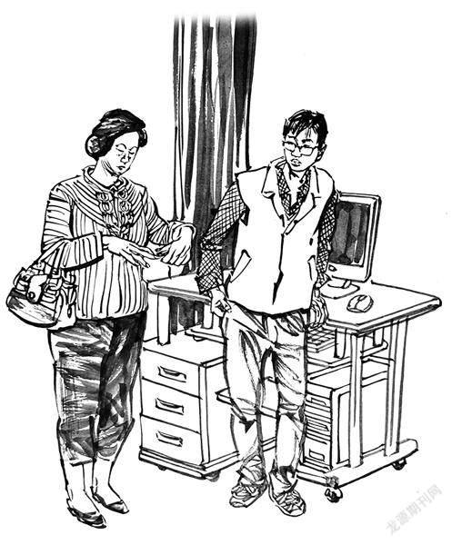
淼淼妈没说话，看她的表情，这关是蒙对了。
淼淼妈又问道：“她去旅游，你怎么不一起？对了，她是去哪儿来着？”
她去哪儿，您老不知道？这是又要考我呗，蒋祥心里嘀咕着。淼淼可没跟蒋祥提过要去哪儿，不过刚才找吹风机时，蒋祥不小心碰到了电脑桌上的鼠标，电脑当时是待机状态，鼠标一动就亮了屏，网页上显示着云南大理的旅行攻略。
“淼淼去大理了，我要加班就没一起。”蒋祥只能赌了，又补了一句，“她应该把您也带去的。”
淼淼妈嗔怪道：“她要有那份孝心就好了！”见阿姨这表情，看来运气不错，连过两关了。
淼淼妈看着蒋祥若有所思，她搓搓手指头，突然随口说道：“那个谁，给我拿一下指甲钳吧，我剪肉刺。”
还考我？以淼淼的收纳习惯，就是真男朋友来了也未必找得到，可蒋祥刚给小咪用过指甲钳。他迅速找到，递了过去。淼淼妈嘟囔道：“看来还真没少来！”淼淼妈一边收拾起屋里凌乱的东西，一边四处查看，在发现家里并没有什么男士用品时，她仿佛松了一口气。蒋祥则趁机溜到阳台，把小咪的猫砂、食盆等东西一股脑儿地收进储物柜。
淼淼妈显然对淼淼和蒋祥的关系不太高兴，不过最先的疑虑算是打消了。既然不是女儿家里闹贼，她就打算走了，蒋祥刚要松口气，淼淼妈却一回身，问道：“你不走？对了，今天淼淼不在家，你来干吗？”
“我……这不明天要下雨嘛，淼淼要我来帮忙关窗户。我这就要走啦……”蒋祥急中生智地应付了一句，也跟着淼淼妈走出了房门。
两人刚进电梯，蒋祥突然想到小咪还在楼上呢，得找回来啊！他只能说：“阿姨，我想起来，我朋友正好住楼上，我上去打个招呼，就不跟您下楼了，您走好啊！”说着，蒋祥朝淼淼妈鞠了一躬，跨出电梯，撒腿往楼梯间跑了。
淼淼妈一脸狐疑地盯着蒋祥，还没来得及说啥，电梯门就关上了。
蒋祥如释重负，爬了好几层楼梯，才找到躲在角落里的小咪，并一把将猫拎了回去。
唉，终于完工，这单活儿还真费劲！
转眼到了春节，淼淼又给蒋祥发来了新订单：她要跟妈妈回老家过年，小咪就又要拜托给蒋祥啦！淼淼留了一个新地址，就在她家对面的小区。
蒋祥问：“你搬家了？”
淼淼回复说：“那是我妈家，最近都是我妈在照顾小咪呢！”
蒋祥惊讶了：“阿姨同意你养猫了？”对方回了个鬼脸的表情：“这事啊，说起来还多亏了你。”
蒋祥一头雾水，关我啥事？
淼淼解释说，那天妈妈回去后，说什么都瞧不上蒋祥这个“准女婿”。淼淼就借坡下驴，说她一个人太孤单了，没有男朋友，好歹让她养只猫……
蒋祥苦笑：“你妈妈就那么不待见我呀？”
淼淼发来“笑脸”的表情，说道：“你那天上楼去找小咪的时候，是不是跟我妈撒谎了？我妈说，我楼上好几户，住的都是单身姑娘，天晓得你上去干吗了！后来我妈越想越不放心，就跟我说，‘只要你跟那男的分手，养狮子、养老虎我都不管你！总而言之，你帮了我大忙！”
蒋祥听了，哭笑不得。呵，我这喂宠人还能发展这业务呀！
（发稿编辑：丁娴瑶）
（题图、插图：陆小弟）
执着的人¶
王福军
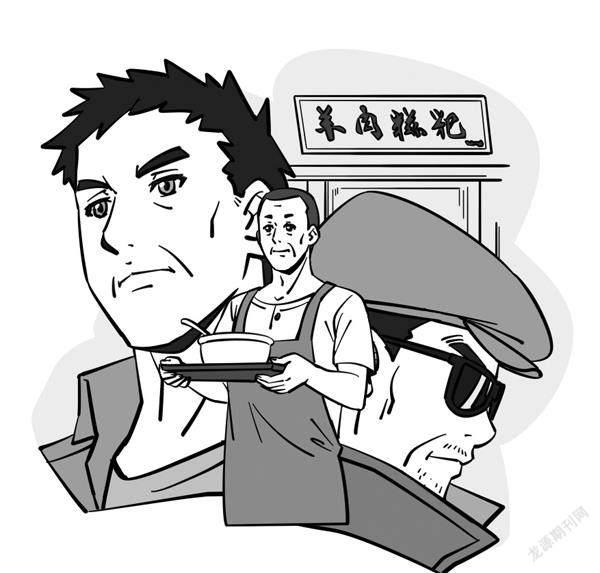
宜州这地方向来祥和平静，可是最近，突发了一起杀人案。
那晚，有个女人取了现金后被歹人盯上了。等女人走到黑暗处，歹人便上前抢夺，争抢间，女人被推倒了，后脑勺重重地磕在地上，当场就死了。因为附近没有监控，也没有目击者，而且案发后下了一场大雨，将歹人有可能留下的痕迹都冲刷掉了，警方一直没能破案。
这事引起了一阵恐慌，后来渐渐平息下来。寻常百姓的日子总要过，这不，大家又像往常一样，坐到了刘老犟的糍粑店里。
糍粑是宜州人爱吃的一种小吃，做法不复杂，把糯米蒸熟放到石槽里，用石锤或木槌反复砸烂，最终变成泥状就行了。糍粑并非宜州特有，但宜州的最好吃。在宜州，刘老犟的糍粑是公认的天字第一号，尤其是那碗糍粑羊肉汤，一个字，绝！这不仅是因为他家的店传了好几代，口味独一份，更在于他打糍粑时绝不惜力。将熟糯米制成口味最佳的糍粑要打多少下，他清清楚楚，绝不少打一下，也不多打一下。有件事最能说明这一点。
一次，刘老犟在店里打糍粑，有个人跑过来，吼道：“刘老犟，你家羊圈失火了！”刘老犟手上却不停，继续打。那人急得冒火，又吼道：“你聋啦？你家羊圈失火了，还不回去救火？”刘老犟还是继续打。那人见喊不动刘老犟，就喊别人去救火。救完火回来，却见刘老犟还在打糍粑，那人怒道：“刘老犟，我们去救火，你倒像没事人，你是死人啊！”
这一回，刘老犟停下了手中的石锤，擦擦汗，问：“你说什么？”
那人没好气地说：“你家羊圈刚才失火了，你怎么一点不急？”
刘老犟说：“我刚才在心里数数呢，顾不上听你说话。”
那人气道：“死刘老犟，少数多数又算得了什么？”
刘老犟瞪眼回道：“那不行，数字要是乱了，糍粑就完了。”
从此宜州流行起一句话，“刘老犟打糍粑，一步不能乱”，说的就是刘老犟对打糍粑的“执”。也是因为这，宜州人常说，今生今世不吃一口刘老犟的糍粑羊肉汤，白活了！所以，杀人案的风波平息后，大家想到的第一件事就是去刘老犟的店里吃一碗糍粑羊肉汤。
刘老犟的店里恢复如初，只一点不同——多了一个固定的客人。
要说像刘老犟家这样的老店，有固定的客人很正常，但这位客人不同，他看着不到四十岁，人偏瘦，不多话，最明显的不同是，来的频率相当高，但又没有规律。糍粑店早晚开门，一般客人一天至多来一次，要么早上来，要么晚上来，时间都很规律。他却有时早上来，晚上也来;有时早上不来，晚上也不来，没个准。他到了店里，有时要碗糍粑羊肉汤细细吃，有时则不吃，就坐着想心事。客人上门，无论吃不吃都没有撵的道理，刘老犟也就由着他，从不饶舌。
时间一长，众老客都知道了这人，偶尔在他点单、付账时听他跟刘老犟说话。那是一口标准的本地话，都很简短，他绝不多说一个字。众老客听后相视一笑：果然是咱宜州人，执，执得几乎过了头！
这位执客人一来就是一年多。
这年年根，天冷得要命，刘老犟的生意更加红火了，一碗暖心暖肺的糍粑羊肉汤，下肚实在太舒服！晚上，执客人一如既往地坐在店里一角享用他的汤。快打烊时，来了一个人，很精壮，戴顶帽子，鼻梁上架一副墨镜，有些风尘仆仆。他急急地对刘老犟说：“来份糍粑羊肉汤！要大碗的！”
刘老犟抱歉地说：“您是第一回来吧？今天糍粑没了，要不您吃点别的，或者明天再来？”
那人“嗯”了一声，看上去很失落。一会儿，他说：“老板，我就想今天吃，您能辛苦一下，重新打点糍粑吗？我可以付工钱！”
刘老犟见这人挺执，便说：“工钱倒不必了，但您得等。”
新客人激动地说：“我等！”
接着刘老犟便按着自己的节奏打糍粑，花了好一会儿工夫才完成。新客人虽然着急，还是等到了最后。糍粑羊肉汤一端上桌，新客人就迫不及待地吃起来，他吃得很仔细，细品、细嚼，再慢慢咽下。
这时候，店里的客人不多了，但执客人还在。他吃完后，像往常一样坐在位子上，偶尔抬头看两眼，不时掏出手机发发微信。
新客人吃完后长吁一口气，一脸满足又不舍的样子。他突然吓了一跳：面前不知何时站着一个人。
是执客人！执客人开口便问：“吃完了，袁大龙？”
新客人一颤，要动，又不动了，因为身边已来了好些精干的人，全是执客人发微信叫来的。
很快，宜州传出一个消息：一年多前那起杀人案的犯罪嫌疑人，抓到了！是刑警在刘老犟的店里抓到的，而刑警就是那位执客人。
当初，执客人调查发现，一个叫袁大龙的人有作案嫌疑。袁大龙很穷，又不好好工作，一直没吃过刘老犟的糍粑羊肉汤。他不止一次跟人感叹：“这辈子要是没吃过刘老犟的汤，白活了，我就是抢钱也要吃一回！”杀人案发生后，袁大龙就消失了。从此执客人一边到处找，一边等——在刘老犟的店里等，他断定袁大龙一定会来吃的。
这一等就是一年多。
袁大龙之所以会来，是因为他要偷渡出国，一想到或许永远回不来了，他决定走之前了却一桩心事：吃一回刘老犟的好汤！他心想，这都一年多了，自己的案子肯定已经被搁置了，于是他壮着胆子，特地来吃一回糍粑羊肉汤。万万没想到，刑警比他還执，打听到他对刘老犟的糍粑羊肉汤念念不忘，就在店里蹲守了一年多！
大家听说后都不禁感叹，宜州人啊，还真是各有各的执！
（发稿编辑：曹晴雯）
（题图：陶 健）
抬棺¶
宋利民
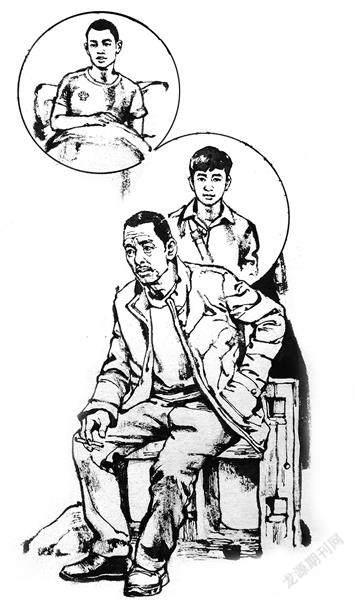
王宝山的老爹王老爷子死了，王宝山打算用“十二道杠”，送老爹最后一程。当地发送老人的说道多，光抬棺就分“四道杠”“六道杠”“八道杠”……“十二道杠”是最高级别，需要二十四个精壮汉子把棺材抬到坟茔地，不论远近，要一气抬到，半路不能停下，在哪里停，就得在哪里埋。
村里的田老根抬了四十多年棺材，是抬头杠的。抬棺不同于抬木头，抬木头可以喊着号子，迈着整齐的步子朝前走。抬棺不能喊号子，说是声音会惊扰棺材里的人，只能用眼睛瞟着抬头杠的，他迈哪只脚，就都迈哪只脚;他迈多大步，就都迈多大步。步伐如果不一致，杠子在肩上分量格外重，棺材还会不停地颠簸，前进的速度也慢。称职的“头杠”会带着杠友们又快又稳地把棺材送到坟茔地。
王宝山恳求村主任管大叔给田老根传个话。十二道杠是大活儿，坟茔地离家又太远，别人抬头杠他不放心，希望田老根能不计前嫌，帮王家办好这桩丧事。
一个村住着，王、田两家的恩怨，管大叔当然知道，他也看得出来，尽管过去二十多年了，可田老根仍然耿耿于怀。
二十多年前，王宝山赶着马车往镇上的粮库送粮食。走到村头，采石场放炮，马惊了，拉着一车粮食狂奔起来。王宝山一只手拉住车闸，另一只手死死地抓住儿子王小强，儿子才没有被甩下去。田老根的儿子田浩浩也在车上，却被甩下车，脑袋正巧磕在路边的一块石头上，受了重伤。伤在脑袋，田浩浩从此就站不起来了，两条腿软软的。田老根跑遍各大城市的大医院，得到的答复都一样：这是从来没见过的怪病，国内没有哪家医院能治这种病。
活蹦乱跳的儿子变成了坐轮椅的残疾人，田老根咋也咽不下这口气，他认定王宝山是造成这一切的罪魁祸首。车上明明坐了两个孩子，田浩浩伤得那么重，王小强却毫发未损，一定是王宝山在生死关头只顾救自己的儿子。如果他能拉浩浩一把，浩浩也不至于被颠落车下，受了重伤。特别是，看着王宝山的儿子越来越有出息，先是考上国内的名牌大学，学的是热门的医學专业，毕业后又考上了美国知名医学院的研究生。两个光屁股一起长大的孩子，一个即将成为医学界的拔尖人才;一个却成了啥也干不了的病秧子。田老根心里越来越不平衡，他发誓一定要为儿子讨回公道，让王家也尝尝走霉运的滋味。
从王老爷子卧床那天起，田老根就想好了，等王老爷子驾鹤西去，王宝山一定会请自己去抬棺，到时自己就实施复仇计划。
田老根的计划就是在绑棺材的绳子上做文章：棺材在王家门口一起步，绳子就断开，绳子断了，棺材势必落地。按照当地的习俗，出殡的时候棺材只要抬起来了，在哪里落地，棺材就得埋在哪里。大门口埋棺材，王宝山还不得窝囊死啊！再说了，棺材还没挪窝就落地，这得倒多大的霉运呀！他王宝山就是不懊恼死，也得折腾出个好歹来。
田老根在县里的化工商店买了一瓶盐酸。把盐酸倒到绳子上，绳子就会被腐蚀，稍稍一用力就会断，不留心根本看不出来。抬棺的绳子长时间不用，放置不好也会朽烂，王宝山猜不到是他田老根做的手脚，还不是干吃哑巴亏？
果然，王宝山托管大叔来递话，田老根很痛快地应承了，说乡里乡亲的，谁还用不着谁呀！他让王家把心放肚子里，等出殡那天一大早他就去。
管大叔把田老根这些话一字不漏地说给王家人听，说田老根心里的疙瘩解开了。他还叮嘱王宝山，那天一定要陪田老根多喝几杯酒，谢谢人家宽宏大量、不计前嫌。
出殡的时间是早晨七点半。七点十分，王家人给王老爷子入殓。盖上棺材盖后，田老根指挥杠友们绑好底杠，拴好绳子。只等时辰一到，王宝山把顶在头上的丧盆子往棺材前一摔，田老根一声喊，杠友们一齐发力，抬起棺材就走。
田老根心里说，报仇的时候到了。他想象王宝山看到棺材落地时一定会昏死过去，家人们七手八脚地掐人中、泼凉水……苏醒过来后，王宝山仰天长叹，说他造孽了，老天爷惩罚他……田老根正沉浸在幻想中，身后的一个杠友推了他一把：“田叔，孝子摔完丧盆子了，该你下令上路了！”
田老根“起”字到了嘴边，又咽了回去。他有些犹豫，脑袋里闪过一个念头：自己报仇了，心里舒坦了，可是对王家是不是有点不公平？有错的只是王宝山，躺在棺材里的老爷子没有错呀，王家的其他人也没有错。
“田叔，该走了！”杠友又推了田老根一把。
田老根知道，自己没有时间犹豫了，如果再不下命令，会引起大家的怀疑。他喊了一声：“起！上路！”话音刚落，二十四个人一齐用力，棺材被抬起来了。
可是，一直走到坟茔地，田老根幻想中的场面也没有发生。绳子始终好好的，没有断，田老根精心设计的报仇计划竟落空了。
问题出在哪里呢？田老根仔细回想着：昨天晚上，他按照儿子田浩浩上网搜的办法，把盐酸倒在了绳子上，怎么会没把绳子烧坏呢？难道自己买的盐酸是假货？不会呀，当时在化工商店用一根布条做过试验，盐酸没有问题。知道这件事的只有浩浩，难道是他坏了自己的事？不应该呀，他是受害者，最该支持复仇啊！
田老根回到家，还没等他开口问，儿子田浩浩主动承认是他破坏了父亲的计划。
“您跟我打听用啥能烧断绳子而不留痕迹，我就知道您一定是想利用给王爷爷抬棺的机会替我出气。我在网上查到，碱能中和盐酸，就在您买的盐酸里悄悄加了点石灰水。那瓶盐酸，现在已经没有腐蚀性了。”
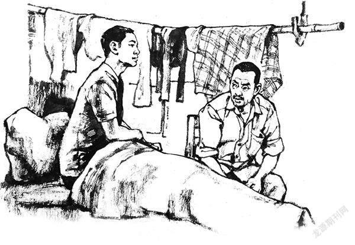
“怪不得我打开盐酸瓶子时，没有闻到刺鼻的味道……”田老根停了一下，不禁问，“可是浩浩，你为啥要这么做啊？”
田浩浩低下头，说：“爸，怕您生气，有件事我一直没有和您说真话。其实当年我和小强是偷偷爬上车的，王伯伯一开始根本不知道。王小强当时坐在车中间，王伯伯伸手可以够到他，我坐在车后面，出事时，王伯伯根本够不着我呀！”
田老根沉默片刻，问：“这事你怎么不在抬棺前告诉我？你……是不是怕我知道了以后还是不甘心，又想别的法子去弄断绳子？”
田浩浩不好意思地一笑，算是默认了。就在这时候，田浩浩的妈妈从外面走进来，高兴地说：“好消息！王小强从国外打来电话，说他的导师找到了治疗咱们浩浩病的办法，他们已经订了机票，五天后就能回来给浩浩治病了！”
“真的？”田老根追问了一句。
“当然是真的！小强妈说，她家老王一直把浩浩的病放在心上，那会儿小强考上军事学院，他硬是没让孩子去报到，非让孩子去学医不可。他说自己当年没有保护好浩浩，无论如何也要想法治好咱孩子的病！”
田老根抹了一把脸上的泪花，对儿子说：“好儿子，你做得对！老爸谢谢你！”
（发稿编辑：吕 佳）
（题图、插图：谢 颖）
好邻居¶
王永玺
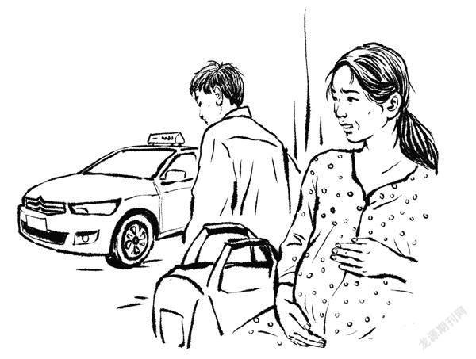
秀茹今年三十八岁了，是不折不扣的高龄孕妇。老公衡孝东工作忙，经常要出差。这天，公司又有急事，衡孝东算了一下日子，对秀茹说：“距离预产期还有几天，我这次出差，两天就能赶回来。我已经和对门邻居大叔打过招呼了，万一有急事，你就按家里的报警器。”
虚掩房门，秀茹送孝东下楼。回来时，她在楼道里碰到了对门的邻居大叔。大叔寒暄道：“有事你按铃，小衡跟我交代过啦！”秀茹笑着点头致谢，见大叔拎着鸡和鱼，她便问道：“家里来客人啦？”
大叔乐呵呵地说：“不算客，我儿子回来啦！他一直在省城上大学，你们搬来还没见过他呢！”
秀茹听了，禁不住摸了摸自己高高隆起的腹部。她多年不孕，这个孩子是好不容易才怀上的。以前总是羡慕别人家的天伦之乐，而现在，自己和老公马上也能拥有这份幸福了。
秀茹回到家里自己吃了晚飯，然后简单洗漱了一下，便关灯睡觉了。睡前，孝东打电话过来，说飞机延误了，现在才刚要登机。秀茹说：“放心吧，我一切都好。你落地了记得发消息给我。”说完，困意袭来，秀茹很快睡着了。
孕妇容易起夜，秀茹半夜醒来，开了床头灯准备上厕所。这时，她听到不知哪里传来一阵响动声，看窗外，几只猫追打着跑远了。
是小区里的流浪猫呀！秀茹放下心来，走到客厅伸手开灯，却发现灯坏了。她只能摸索着走，结果肚子不小心撞到了桌角，她站立不稳，一屁股坐在了地上。秀茹忍不住发出一声惨叫，还感到一阵热流从体内涌出——破水了，这一摔，怕是提前发动了产程。
秀茹连忙拿起手机给孝东打电话——关机，对呀，他还没落地呢！秀茹便给他微信上留了言，然后立即拨通了120。接线员交代她尽量平躺，等待救护车赶来。秀茹思索了一下，先去把房门打开，以便待会儿急救人员上门。然后，她拿起放在桌子上的应急待产包——孝东提前准备的，里面有现金和证件。秀茹抱着待产包回到床上，按下了报警器。现在这个紧急关头，她真的很需要人帮她。
很快，一个大男孩来到秀茹床前，小心地问：“大姐，你怎么了？”秀茹犹如抓住了救命稻草：“你是对门大叔的儿子吧？我要生了……”
男孩如梦初醒：“那……我去叫车！”说着，他就跑走了。男孩刚走，邻居大叔也过来了，看到秀茹的样子，显得很紧张：“你是不是要去医院？”
秀茹用尽力气答道：“是的！拜托了……”
大叔连忙说：“别着急，我马上把车开到楼道口……”说完，他就三步并作两步跑下楼。
很快，男孩回来了，气喘吁吁地说：“车在楼下了，来，我扶你起来。”秀茹有点不好意思地说：“我羊水破了，要平躺……”
男孩愣了一下，说：“那……我抱你下楼。”
孕妇的分量可不轻，男孩咬着牙，把秀茹横着抱起，一步一颤地往下挪。好在是二楼，楼层不高，但到楼下时，男孩已是大汗淋漓。司机大叔赶忙上前接过秀茹，两人小心地把她放到后排平躺。秀茹的阵痛此时有所缓解，便连声道谢：“大叔，你们全家都是好人！”司机大叔头也没回，只是摆了摆手：“你老公跟我交代过的，邻居之间互相照应是应该的嘛！”他一边说着，一边连闯几个红灯，风驰电掣地往医院赶。
车子刚停在急诊室门前，医生和护士就赶来了。医生快速检查了一下，对男孩说：“你是家属吧？快去办住院手续。”男孩也没解释，接过秀茹的待产包，飞快地跑走了。司机大叔正要帮忙推着病床，一辆警车在急诊室门口停了下来。从车上走下两个警察，对着司机大叔敬了个礼，说道：“您好！刚刚您有几个违章，请过来处理一下。”
司机大叔歉意地对秀茹说：“不好意思……”秀茹连忙说：“不好意思的是我！您去和警察大哥解释一下，都是为了我！”
护工很有经验地说：“没事，送人来急诊的违章记录一般是可以消除的，你去警局说清楚就行。”说完，她大步推着秀茹进了待产室。
那边，飞机刚落地，孝东一开手机就看到了秀茹的留言。他连机场都没出，直接买票赶了回来。等他风尘仆仆地赶到医院时，正是凌晨时分，刚好赶上护士抱着孩子从产房出来：“谁是顾秀茹的家属？”
孝东连忙上前，接过襁褓中的孩子。孝东颤抖着问：“我老婆怎么样？”护士说：“母子平安！幸亏昨晚来得及时，医生说再晚一会儿就危险了。你先去病房等着，你老婆很快就会被送过去的。还有，记得去缴费处办一下手续。”
一家三口终于在病房里团聚，秀茹说：“昨天晚上多亏了对门大叔和他儿子，我一按报警器，他们马上就到了……我破水了不能走动，是他儿子把我抱下楼的。”
孝东点头：“我早打听过对门大叔是开出租的，我就想着万一有急事，他有车也方便。我打个电话感谢一下。”说完，他拿着手机走到病房外。
孝东是个大嗓门：“大叔！真是谢谢你了！我一定要正式致谢，你们全家都是我的大恩人……要不是您儿子……什么？哦……无论如何，大叔，您是我全家的恩人！”
打完电话，孝东一脸狐疑地回来问秀茹：“你说抱你下楼的是大叔的儿子？”
秀茹说：“对啊！怎么了？”
孝东瞪大了眼睛：“对门大叔以为那孩子是咱家的亲戚……说他儿子昨晚一直在家睡觉，都叫不醒！”秀茹惊讶极了：“啊？可是……”她突然想起了昨天晚上交给男孩的待产包，里面有她所有的证件和一万五的现金。她心里一“咯噔”，说：“完了！那个男孩，不是对门的儿子，难道是个贼？怪不得昨夜我听到有声音……”
孝东打开病房床头柜门，发现那个包好好地在里面放着。打开包，秀茹的手机和证件都在，现金没了，包里还有一条金项链和两个金戒指。孝东有点诧异：“现金都用完了？你带这些首饰来做什么？”
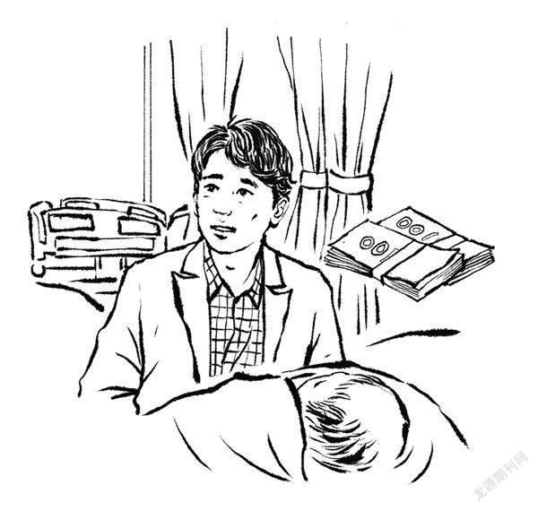
秀茹纳闷：“这些首饰，我一直放在书房抽屉里，咋跑到这包里来了？还有那些现金，我没动过啊！”
孝东一拍脑袋：“看来那孩子真的是贼啊！这些首饰肯定也是他翻出来的，估计他装在一起准备都拿走的，可是你突然临盆，他良心发现了。等到了医院，他匆匆忙忙地拿走了现金，至于这些金首饰，会不会是忘拿了？”
秀茹呆住了，心里五味杂陈。孝东拍了拍她的肩膀，说：“总算是盗亦有道吧。我先去楼下缴费。”说完，他便起身去楼下了。几分钟后，孝东回来了，他对秀茹说：“钱，没丢。缴费处的人说，你的住院押金已经交了，一万五，一分不少……”
几个月后的一天，秀茹收到了一封匿名信——
大姐，你和孩子应该都很好吧！我那天看你家门没关，就悄悄进来了。一直等你睡着后，我在桌子上发现了那个装了好多钱的包，还在抽屉里找到了金首饰。当然为了“安全”，我还顺手弄坏了客厅的灯。可你摔倒的那一刻，我才发现，你竟然是一个临盆的孕妇。我妈就是生我的时候难产死的，所以那一刻，我忘记了自己是个贼。看到你挣扎着打电话求助的时候，我就在想，如果我从小也有妈妈教导，我的人生会不会不一样……
信还没看完，秀茹已经泪流满面……
（发稿编辑：孟文玉）
（题图、插图：豆 薇）
情节聚焦¶
温暖的输液瓶子¶
徐嘉青
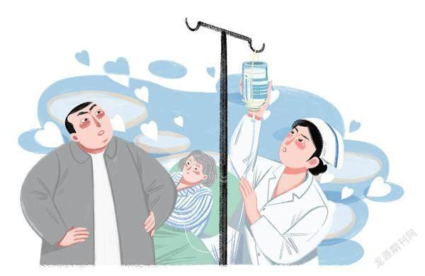
陈飞是一家医院的护士，平日里给病人扎针、上药，工作辛苦不说，有时候还会受气。
这天，陈飞配好药，刚准备推着小车去给病人输液。忽然，门一下子被人重重地推开了。陈飞抬头一看，是个一脸凶相的中年男人。中年男人进来之后啥也不问，冲着陈飞就是一顿斥责：“你们这些医生都是干啥吃的？等了那么长时间，也没个人来给输液，是不是不让人活了？”
陈飞忍不住回敬道：“输液总得有个先后吧？我们都是按顺序安排的。”
中年男人把眼一瞪，说：“谁知道你们这顺序是啥鬼排法？”
陈飞没有再搭理他，把手头的东西收拾好后站了起来。中年男人见她不吭声，又问道：“能不能现在就去输液？”
陈飞问：“你是哪个房间几号病人？”
中年男人说：“308病房3号。”这正是陈飞接下来要去的床位，她冷冷地对男人说：“现在就去。”
中年男人一怔，脸上掠过一丝歉意，不过他啥也没说，一下子拉开门走了出去，那门又弹了回来，晃了几下才停下。陈飞不禁摇了摇头，心里充满了厌恶。
陈飞到了308病房，3号床的病人是个老太太，估计是中年男人的母亲。见到陈飞，中年男人不耐烦地说：“你怎么才来？”
老太太躺在病床上说：“刘根，你咋说话的？”
叫刘根的中年男人当即变成了一副笑脸，俯下身子说：“妈，我不是想着让您早点输液早点好嘛！”老太太说：“那你也不能这样跟人家医生说话哩！”刘根连连点头：“是是是，知道啦！”
陈飞把输液瓶挂到了架子上，给老太太扎好针，调好了滴液的速度，说：“有问题按铃，我随时过来。”
老太太说了声“谢谢”，刘根则扫了一眼陈飞，啥都没有表示。
过了不一会儿，铃响了起来，陈飞接听后，里面马上传来了刘根的声音：“你咋弄的？在别的地儿输液，从来都没事，在这儿输了才多大一会儿，我妈就觉得疼。你快点过来看看，要是出问题，我跟你没完！”
陈飞匆匆忙忙地跑了过去，到病房里一看，老太太脸上满是汗珠，躺在病床上直打哆嗦。输液已经停了，开关被刘根给关了。刘根满脸焦急，一见陈飞就吼道：“你怎么搞的？”
陳飞检查了一番，说：“应该是液体的温度低了，刺激血管，老人家身体有点吃不消。”
刘根急道：“那怎么办？要不我用热水袋暖一下吧？”
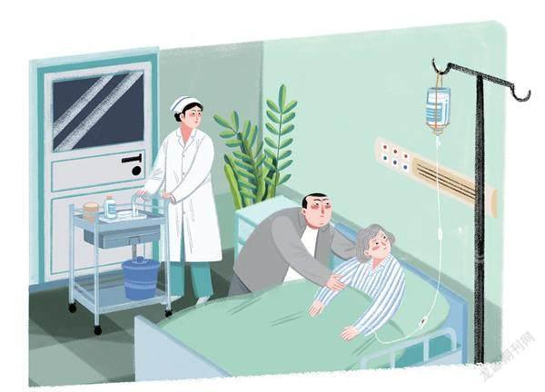
陈飞摇头道：“不行，热水袋温度太高，会影响药效的，我把输液的速度调慢一点吧。”陈飞调整开关，又观察了一会儿，见老太太好些了，才回办公室。
陈飞又忙了好一阵，天黑了，是查房的时候了。她来到308病房，刚推开门，就被眼前的景象惊呆了——只见病床旁边的柜子上放了一条凳子，刘根坐在上面，抱着双臂，靠着墙，正打瞌睡呢！
陈飞一看，气不打一处来，连忙呵斥道：“你坐那么高干啥，地上还不够你坐？”
刘根猛一激灵，马上睁开了眼睛，他看到了陈飞怒气冲冲的脸，不好意思地笑了笑，身子却一动也不动。
陈飞见状，说道：“快点下来！像啥样子？”
刘根说：“再等一会儿，快完了。”
陈飞不解地问：“啥快完了？”说着，她走上前，打算把刘根拽下来。等到了跟前，她发现长长的输液管竟然连到了刘根的腋下。她回头再看看挂输液瓶的架子，这才发现那上面空空如也。
兴许是看出了陈飞的疑惑，刘根“嘿嘿”一笑，解释说：“我怕我妈输液再受不了。她睡眠不好，要是难受醒了，就睡不着了。”
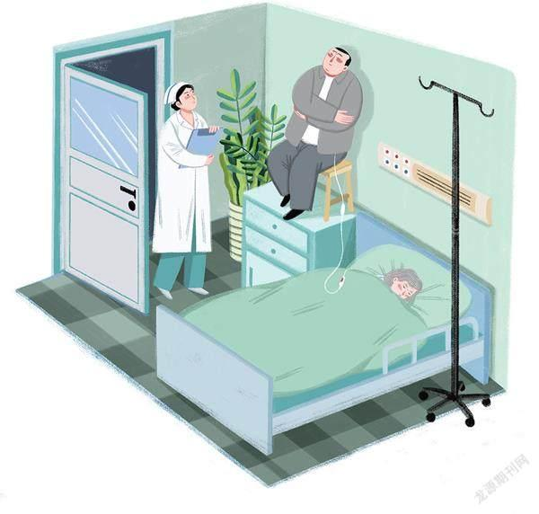
陈飞似乎明白了什么，问：“那你这是……”
“我用胳肢窝把输液瓶夹住，好让液体不那么凉。这液体是怪凉的，难怪我妈一开始受不了。”停了一下，刘根又接着说，“先前我担心我妈，心里着急，对你态度挺不好的，对不住啊，你别往心里去……”
看着原本还觉得是一脸凶相的刘根，不知什么时候，陈飞的眼神变得柔和了许多。
（发稿编辑：吕 佳）
（题图、插图：孙小片）
脱口秀¶
情话可爱多¶
◆ 生气是生气，又不是不爱你了。
◆ 我想你应该很忙吧，那你只看到前三个字就好了。
◆ 未经允许，擅自特别喜欢你，不好意思了。
◆ 见什么世面？见见你就好了。
◆ 落叶归根我归你。
◆ 你上辈子是碳酸饮料吧？不然我为啥看见你就开心得冒泡？
◆ 我喜欢你超过两分钟了，不能撤回了。
◆ 我不是故意的，我是你的。
◆ 请你认真向风学学怎么往我怀里钻。
◆ 要是爱你爱得少些，话就可以说得多些了。
◆ 说来说去，我的择偶标准也就一个字：你。
◆ 我是国家分配给你的宝贝，不支持退货。
（推荐者：紫糯米）
这样回复可能要挨打¶
◆ 什么是最有用的沟通技巧？
神回复：学会闭嘴。
◆ “断食两天以上可以重启人体免疫系统”这个观点，有科学依据吗？
神回复：断食20天吧，不光是免疫系统，整个人生都能重启。
◆ 为何图书馆不能穿拖鞋？
神回复：以防抠脚丫的手，拿来舔手指翻书。
◆ 方言消失的危害有哪些？
神回复：你知道为什么骗子冒充我，给我妈打电话骗钱从来没成功过吗？
◆ 产科医生用什么微信昵称好？
神回复：研究生。
◆ 要怎么形容一个人的无知？
神回复：上天把智慧洒满人间，你却非要打把伞。
（推荐者：卧 龙）
生活哈哈镜¶
◆ 坐公交车，有个小女孩吃雪糕，不小心把奶油滴在我裤子上。我俩对视许久，小女孩突然说：“你赔我雪糕。”
◆ 婚姻中的实用诀窍：一定要主动掌握家里床品四件套的购买权，这样才可以在吵架的时候，一把扯过被子说：“我买的！不许盖！”
◆ 怕打扰室友备考，我就只能拿吉他在楼道里自弹自唱。邻家小孩一会儿过来给我可乐，一会儿又端来一碗面。我问：“你这么献殷勤，是想跟我学吉他吗？”小孩回答：“我妈说，给你吃的喝的，你就不会唱了。”
◆ 黑夜降临，被压五行山下的孙悟空悲伤地唱道：“夜深人静的石猴，是想家的石猴……”
◆ 老婆很瘦，怀孕时也没怎么增重，儿子出生，倒是有八斤多。医生说：“又一个薄皮大馅的！”
（推荐者：刘 振）
大实话说来好笑¶
◆ 以前上街前，摸摸口袋，看钱包带了没;后来上街前，摸摸口袋，看手机带了没;如今上街前，摸摸脸蛋，看口罩戴好没。
◆ 我妈说我是充话费送的，所以才整天抱着手机玩，因为里面有电话卡，是家人的味道。
◆ 刚有人问我：“你天天减肥，有没有变瘦？”真是搞笑，你还天天上班呢，有没有存款？
◆ 晚上散步，很多情侣都抱着聊天。我擦了擦汗，默默地安慰自己，这天气，抱著太热了，我是为了凉快才一个人的。
◆ 有位大哥跟我分享了他的爱情心得——追女孩，其实也没什么技巧，只不过相处的前几个月，心里想着：你是她爸爸。
◆ 和其他公主一样，每天都有骑士带着各种好吃的来看我，唯一不同的是，我的骑士要收配送费。
◆ 在游乐场玩了一天，发现人类的游乐形式只有三种：原地打转、大起大落、原地打转并大起大落。
（推荐者：离萧天）
（本栏插图：孙小片）
传闻轶事¶
饲刀¶
大刀红
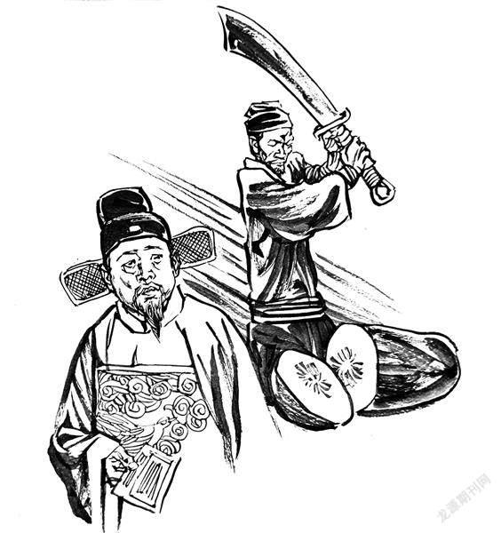
刀从天降¶
林慎之刚到归县当县令不久，就碰上一件人命案子。
原告是陈秀才。那天，他父亲陈员外和张员外在酒楼吃饭，不知怎么，陈员外竟然从二楼坠下，摔得脑浆迸裂。事后，张员外对陈秀才说：“你父亲喝醉了，靠着栏杆醒酒吹风，一时脚下虚软，不慎跌下楼去。”
陈秀才听后心生怀疑：张员外曾找父亲借过一万两白银，蹊跷的是，父亲死后，那借据却不知下落。于是，陈秀才把张员外告到了县衙。
归县有个老仵作，经验丰富，林慎之派老仵作去现场勘验，最终得出结论：陈员外因酒醉跌下楼，此事纯属意外。陈秀才虽有些不服，但也只好接受了县衙的断案。
转眼过了半个月，林慎之以为这案子已经过去了，不料一日衙役来报，说陈秀才又来了，还说出了新的命案。林慎之心中疑惑，他来到大堂，皱着眉头问陈秀才：“你说，又出了什么命案？”
陈秀才瑟瑟发抖地指了指身旁的一只木盒。衙役拿起木盒，呈给林慎之，林慎之闻到一股恶臭味，但还是打开了盒盖。定睛一看，他吓得大叫一声，手一抖，将盒子扔了出去。盒子掉在地上，一颗人头也随着滚落在地——竟然是张员外的人头！
林慎之好不容易才镇定下来，问陈秀才：“张员外是你杀的？”
陈秀才连连摇头，道：“小人手无缚鸡之力，哪敢杀人呀！”
陈秀才说，今天一大早，仆人慌慌张张地来禀告，说院门上挂了一个人头。他赶去一看，竟然是张员外的人头。陈秀才生怕牵连到自己，忙火速来县衙报案。
林慎之派衙役去张员外家查问。衙役回来后说，张家现在乱作了一团。张员外的妻子说，昨日半夜时分，她睡意正酣，突然听见张员外的惨叫声。蒙眬中，只见一把大刀从天而降，取了张员外的头颅后，大刀又凭空飞走了，她当即吓得晕倒在地……
梦中飞刀¶
林慎之听后，觉得不可思议。他唤来老仵作，看着老仵作仔仔细细地查验了张员外的头颅。退堂后，林慎之把老仵作叫到内室询问，老仵作说：“这头断得太干脆，伤口平滑，就像是刀切的冬瓜。全县能有如此神力的，只有两人。”
林慎之问是哪两个人，老仵作说：“其中一个是柳屠户。”
老仵作说，柳屠户是个光棍，他身高八尺，胳膊似牛腿一般粗壮，运刀如风，碎骨如泥。林慎之点点头，说：“你带人去查查，昨晚，柳屠户人在哪儿。你说有两人，还有一个是谁？”
老仵作请林慎之随自己来到县衙外院。院子里，衙门的刽子手卢九斩正精神抖擞地拿着鬼头大刀练功。他练的是劈冬瓜，一招一式格外认真。
两人看了一会儿，老仵作对林慎之说：“大人，我说的第二个人就是咱衙门的刽子手卢九斩。他虽然瘦弱，但使起那把鬼头刀来却异常凶悍。您看他切的冬瓜，每一片切口之处都细腻光滑，无半点拖泥带水的痕迹。”
林慎之听了，不以为意地笑笑。他来归县时日虽短，但也听说了卢家的事。卢家世代刽子手，传到卢九斩，已经是第九代。卢九斩的爹名叫卢八斩，二十年前，他处决了归县最后一名死囚。后来，归县政通人和，百姓安居乐业，县里再也没有处决过死囚了。卢八斩原本是个身材魁梧的大胖子，不再处决犯人后，他就变瘦了，到死时，他的身体几乎薄成了一把钢刀。有人调笑道：“卢八斩用刀杀人太多，死时就变成了一把刀。”
林慎之没有见过卢八斩，但他上任时见到卢九斩，也是一副瘦身板。当时他还有些担心，心想：这一副弱不禁风的样子，拿得动行刑的鬼头大刀吗？好在这些年归县境内并无犯死罪之人，卢九斩这刽子手就是个摆设。
林慎之想到此，对老仵作说：“砍冬瓜和砍人毕竟不同。看卢九斩这痨病鬼的样子，肯定不是他。”
两人回到内室，林慎之从箱子里拿了一张一百两的银票，递给老仵作，道：“上次多亏你眼力了得，看出陈员外是先被钝器打死，再被人从楼上抛尸的。这次，张员外死得蹊跷，你一定要查明真相，日后我絕不会亏待你的。”
原来，陈员外不是意外摔死的。那日，陈员外和张员外在酒楼饮酒。张员外说最近手头紧，想暂缓还钱，陈员外不答应，两人起了口角。张员外随手拿起一个装满酒的酒瓶扔了过去，不想正中陈员外的太阳穴，陈员外当场毙命。张员外吓傻了，过了一会儿才想起脱罪的法子。他先掏出陈员外随身带的借据，然后把陈员外的尸体扔下楼……不料这一切都被老仵作勘验了出来。老仵作见林慎之初入官场，就鼓动他借此敲诈张员外。林慎之一时心动，听从了老仵作的主意。张员外和林慎之讨价还价后，以一万五千两银子了结此事，林慎之这才结案，称陈员外之死乃是意外。
此时，老仵作接过银票，小心地揣进怀里，对林慎之说：“大人放心，小人愿效犬马之劳。”
这天夜里，林慎之做了个梦，他梦见一把刀拼命地追自己。他往天上飞，刀追上天;他向地里钻，刀也跟着钻下地。他感觉到刀锋渐渐逼近自己，后颈一阵冰凉，不由得大叫一声：“我命休矣！”
从梦里醒来，林慎之发现冷汗已湿透了睡衣。
以血饲刀¶
再说老仵作，他私下调查柳屠户，发现张员外被害的那晚，柳屠户真的不在家里。林慎之命人把柳屠户抓来，柳屠户一会儿说自己在赌钱，一会儿说在别人家里吃酒，最后都证实是谎话。林慎之认定柳屠户杀了张员外，逼他在口供上按了指印，上报朝廷，秋后问斩。
归县已经整整二十年没有处决过死囚了，处斩柳屠户那天，刑场周围人山人海。午时已到，柳屠户被押了上来。卢九斩身穿红衣，他身材瘦小，手执的鬼头刀却硕大无比，看起来异常滑稽。虽然是第一次行刑，但他心不慌、手不抖，按父亲说的法子吸气、凝神、举刀。在他的眼里，柳屠户只不过是一个冬瓜，他看准了脖颈方向，一刀斩下去……E958DA8E-480B-4D97-9813-7593CE99C709
所有人都屏住呼吸，不料，卢九斩这一刀始终没有斩下去。那刀在空中“嗡嗡”作响，刀柄晃动不已，最后竟脱离卢九斩的手，飞了出去，直直地插在地上。
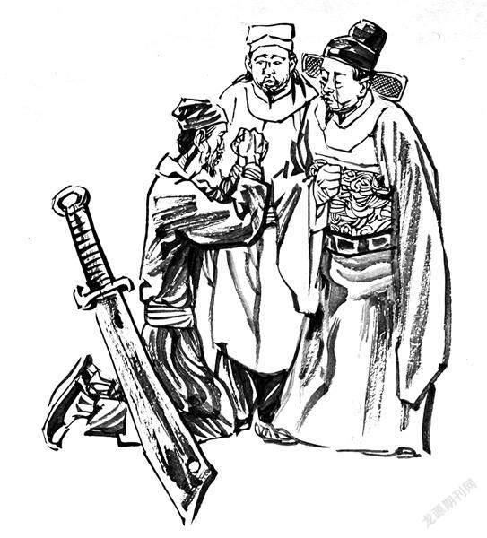
眾人一片愕然。卢九斩来到林慎之面前，跪下禀道：“大人，小人敢以性命担保，柳屠户不是凶手，还请大人重审此案。”
柳屠户在鬼门关前走了一遭，吓了个半死，此时听见卢九斩为他申冤，也忙叫道：“冤枉！”
林慎之一看，现场全乱套了，便下令把柳屠户带回县衙重审。柳屠户这才据实交代：原来他和一个寡妇相好，张员外被害时，他正在那寡妇家。寡妇的夫家是归县的大户，为了保护寡妇，柳屠户才宁死也不说出这段私情。
林慎之听罢，问卢九斩：“你怎么知道柳屠户是被冤枉的？”
卢九斩说：“那鬼头大刀是小的祖上所传，此刀常年处斩囚犯，有了灵性，需靠人血饲刀。不过，它只嗜人犯之血，不杀有冤之人。”
林慎之说：“张员外不是柳屠户杀的，那是谁杀的？”
卢九斩说：“就是这把鬼头刀杀的。”卢九斩说，张员外死的那天，他取刀练功，发现刀身上沾满血迹——一定是鬼头刀知道张员外杀了陈员外。在鬼头刀看来，张员外才是真正的人犯。
林慎之张大了嘴巴，半晌，他才问：“如果没有人犯可杀，那又怎么办呢？”
卢九斩说：“乱世之时，处决人犯，鬼头刀嗜血有保证，可一到太平盛世，鬼头刀没有了血源，就会兴风作浪，我祖上便以自身之血饲养鬼头刀。”
卢九斩说，他父亲由胖变瘦，便是饲刀的结果。到了自己这辈，归县一切太平，鬼头刀更是没了血源，所以自己也只得用血饲刀，但鬼头刀从来没有吃饱过。这次，鬼头刀的灵性让它得知张员外是真凶，便杀了张员外，痛饮鲜血……
林慎之听了，寒毛都竖了起来。他初入仕途，本想做一名清官，因为老仵作撺掇，收下了张员外的银票。回到后堂，林慎之思来想去，不想做鬼头刀的刀下鬼。第二天，他把陈秀才叫来，将张员外送自己的一万五千两银票转交给他。接下来，林慎之又找到那寡妇的夫家，劝说一番，让柳屠户娶了那寡妇。最后，林慎之辞退了老仵作——这种人，自己断断不能再用。
卢九斩把一切看在眼里，不由得笑了。其实，张员外正是卢九斩所杀，他之所以这样做，只因祖先留有遗训。
卢九斩的祖爷卢五斩那会儿，归县匪患严重。当时的县太爷抓了十个“土匪”，让卢五斩处决。每天斩一个，卢五斩砍了整整十天。县太爷因剿匪有功，升为知府。后来，卢五斩才知道，那些“土匪”都是从乡间抓来的无辜百姓。卢五斩怒不可遏，深夜带着鬼头大刀杀了知府，随后自刎而死，以命饲刀。临死前，他留下话来：“自我之后，鬼头刀下，绝无冤魂！”
从那以后，卢家遵守遗训，杀人之前，必当慎之又慎，宁杀贪官，不杀冤民。张员外和林慎之在县衙后院讨价还价之时，卢九斩偷听了前因后果。他义愤填膺，便溜进张府，以细铁丝系住大刀，从窗外飞刀斩杀了张员外。他又趁张员外的妻子晕倒，取出人头，将人头挂到陈秀才家门外。以血饲刀，只是他为了救柳屠户杜撰的故事。
见林慎之知过能改，卢九斩松了一口气。他想，林慎之今后一定会成为一个好官，因为，自己这把沉甸甸的鬼头大刀，一直悬在林大人的后脑勺上呢！
（发稿编辑：吕 佳）
（题图、插图：陆小弟）
海外故事¶
坏狐狸¶
卢金聪
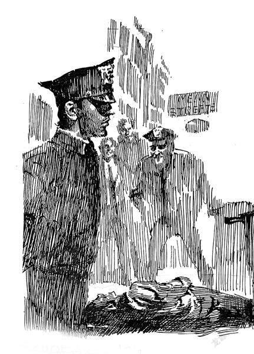
这天，某公寓旁发生了一起凶杀案。一位中年妇女在倒垃圾时被人刺穿喉咙，她的尸体倒在垃圾箱边上，更诡异的是，凶手还在尸体旁用血写了一句话：狐狸在哪里？
警探亨利立馬带上助手波尔赶到现场，那里已围了一圈人。在现场勘查一番后，亨利对波尔说：“凶手是埋伏在垃圾箱里的，趁受害者掀开盖子倒垃圾的一瞬间，突然用利器刺穿她的喉咙。一切发生得太快，受害者都没叫出声来。”
波尔感叹：“这么热，凶手竟憋在垃圾箱里，真可怕！”
亨利用手指了指死者：“看，她的项链还在，说明凶手不是谋财，很有可能是仇杀。至于那行血字，也许隐藏了什么线索……”
波尔拍下了现场的每一个角落，结束后，两人正准备回去，一个身材瘦削的记者挤过来，说道：“我是亚克斯电台的记者，想问一下你们对这起案件有什么看法。”
“目前无可奉告。”说完，亨利推开那记者，带着波尔走了。
据调查，死者名叫黛西，五十九岁，是一名动画片导演。平日里她不太喜欢与人交流，从没和谁结仇，案情一时间陷入了僵局。
过了几天，亨利接到报案，又有人被杀了。他和波尔来到案发现场，那是一条人迹罕至的小路，一名男子被人用钝器砸碎了脑袋，现场没有目击者。和上次一样，尸体旁也留有一行血字：狐狸在哪里？
很快，记者们闻讯赶来。亨利和波尔忙完准备离开时，又被堵住了，其中就有上次那个亚克斯电台的记者。他问道：“这次命案现场也出现了那行血字，这是一起连环杀人事件吗？”
“抱歉，目前无可奉告。”亨利和波尔挤开记者，上车离开了。
据了解，受害者叫赫伯特，五十四岁，是一名动画公司的制作人，为人和善，也没和谁结过仇。
亨利在办公室里陷入了沉思，忽然，他对波尔说：“上次那个受害者也是做动画的，怎么这么巧？快去查查他们有没有什么交集！”
几个小时后，波尔带着一张报纸回来了，他兴奋地说：“这两名受害者一个月前合作过一部叫《坏狐狸2》的动画片，你看……”
只见报纸上写道：“时隔多年，曾风靡一时的动画片《坏狐狸》终于迎来它的续作，由原班人马打造的《坏狐狸2》即将上映。这一次，坏狐狸是怎么被警察抓进大牢的？敬请期待！此片导演：黛西·罗尔;制片人：赫伯特·西蒙;原作：萨拉·玛索。”亨利看完后说：“两名受害者的名字都在这上面，看来凶手是盯着《坏狐狸2》的主创团队行凶，萨拉·玛索很可能是下一个目标。”
事不宜迟，两人赶紧找到萨拉的住址。他们把车停在附近的街上，然后去萨拉的公寓。路上，亨利透过街边的橱窗发现，有人跟踪他们。他对波尔说：“我们被跟踪了，你从左边那条岔路绕到后面，我们前后包抄，把他抓住。”
波尔立马拐向左边的岔路。见时机已成熟，亨利猛地回头向跟踪者冲过去。那人转身想跑，却被身后的波尔抓个正着。一看，这跟踪者竟是那个亚克斯电台的记者！亨利质问道：“你跟着我们干吗？”
那记者战战兢兢地说：“我想挖一个大新闻，但你们一直不肯透露案情进展，我只好偷偷跟着。”
“下次再跟踪我们，我就打断你的鼻骨，快滚！”说完，亨利用力一推，那人连滚带爬地逃了。
撵走记者后，两人走进萨拉的公寓，她是一位七十多岁的老太太。一进门，亨利就表明了来意。萨拉听后惊道：“居然有人为了一部动画片杀人，这太不可思议了！”
亨利问：“《坏狐狸2》究竟是一部什么样的动画片？”
萨拉说：“我这里有录像带，二位可以看一下。”
《坏狐狸2》讲的是警察如何与一只坏狐狸斗智斗勇，把它抓进大牢的故事。故事很简单，是给小孩看的。亨利看完后一头雾水，一会儿，他又问萨拉：“案发现场都留有一行血字——‘狐狸在哪里？你知道是什么意思吗？”
过了好一会儿，萨拉说：“我想起来了，这是第一部《坏狐狸》结尾时典狱长的最后一句台词。”
“第一部《坏狐狸》？”
“没错，是《坏狐狸2》的前作，一部几十年前的老动画片。”
很快，萨拉又把《坏狐狸》的录像带找了出来。影片讲述了一只坏狐狸被警察抓进了大牢，在牢里，它不光忍饥挨饿，还常常被狱警殴打。忍无可忍的坏狐狸用尽各种方法，最终成功越狱了。最后一个镜头是典狱长对着空荡荡的牢房怒吼：“狐狸在哪里？”
亨利决定将两盘录像带借回去研究研究。为了萨拉的安全，亨利让波尔留在公寓附近的车上暗中保护，他明天一早来接替。
夜里无事发生。第二天清晨，波尔在车里打了个盹儿，一会儿，亨利就赶过来了。他对波尔说：“我们再去萨拉家看看，以防万一。还有，我已经知道是怎么一回事了。”他边走边说，昨晚他从萨拉家回去后，继续研究起那两盘录像带。他突然想到妻子在报社工作了几十年，便让妻子找来了一些当年关于《坏狐狸》的报道，发现曾发生过一件和《坏狐狸》有关的事。波尔赶紧问：“什么事？”
“几十年前，有个五岁的男孩，母亲死了，父亲又找了一个女人。他不想让女人知道自己有孩子，就把男孩锁进地下室。男孩每天吃剩饭，只要一哭喊就会引来父亲的毒打，过了十年才被人发现。此事在当时引起了不小的轰动。”
“这跟我们的案子有关吗？”
亨利继续说：“在男孩被关的十年里，父亲为了不让他哭闹，在地下室放了一台小电视机，还用录像机给他播放动画片看，正是《坏狐狸》！我不清楚男孩把《坏狐狸》看了多少遍，但有一点可以肯定，十年的囚禁时光让他的精神出了点问题，他逐渐把自己想象成片中那只被囚禁的坏狐狸，幻想自己有一天也能像坏狐狸那样离开地下室。从某种意义上说，《坏狐狸》给了他活下去的希望。”
听到这里，波尔恍然大悟：“可几十年后，《坏狐狸》的主创团队又制作了《坏狐狸2》，这次坏狐狸又被关进了大牢……”
“没错，这是他不能忍受的，所以他要报复《坏狐狸2》的主创团队。这个男孩名叫亚克斯。”
波尔一惊：“亚克斯？我没记错的话，这不是之前跟踪我们的那个记者所在电台的名字吗？”
“根本没有叫亚克斯的电台，那就是他的名字。我早该想到，他跟着我们不是为了挖大新闻，而是借助我们找到萨拉的住址。”
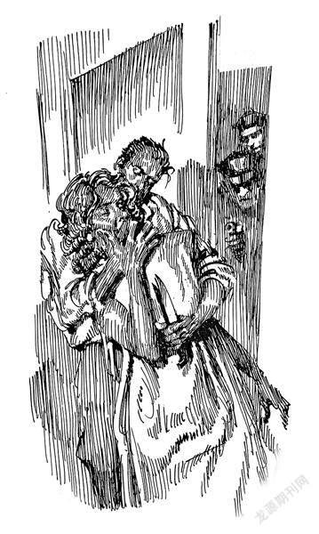
说话间，两人到了萨拉的公寓，隐约听到里面有搏斗的声音。波尔叫道：“糟糕，看来亚克斯趁我打盹儿时偷跑过来了！”两人以最快的速度奔过去，一推开门，就见亚克斯正用匕首捅刺萨拉，萨拉则用椅子当盾牌拼死抵抗。亨利举起枪，喊道：“住手，放下刀！”
亚克斯激动地说道：“我要杀了她！他们想把我关回地下室！”
“清醒一点，亚克斯！快放下刀，你是你，不是那只狐狸！”
亚克斯绝望地喊道：“不，我永远都是那只狐狸！”说着，他举起刀继续刺向萨拉。
亨利和波尔同时开枪，亨利击飞了亚克斯手上的刀，波尔则一枪击中亚克斯的胸口，亚克斯应声倒地。亨利让波尔赶紧叫救护车，萨拉没有生命危险，可亚克斯受的是致命伤。奄奄一息间，亚克斯用微弱的声音问：“狐狸在哪里？它跑掉了吗？它还会被关起来吗？”
亨利轻声道：“它跑了，自由了，它永远都不会被关起来了。”
听到这，亚克斯的嘴角露出一丝微笑，缓缓闭上了眼睛……
（发稿编辑：曹晴雯）
（题图、插图：佐 夫）
我的故事¶
不是你想看的那种书¶
忍者文身
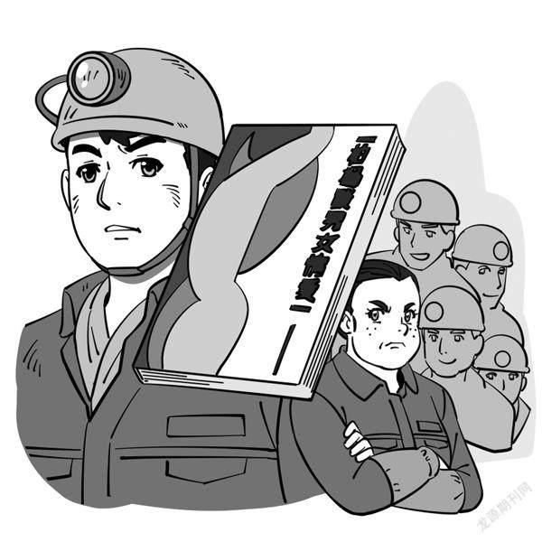
四十年前，我还是个二十岁出头的毛头小子，跟着师傅在村子附近的矿山开挖掘机。我们的工作是将采面上的石头装到有铁轨的矿车上，再由运料工将这些石头推往料场。全班十五六个人，数我和师傅学历“高”——都上过初中，所以我俩是技术工，其他人则是力工。
刚开始，我在这个群体中非常不适应，因为师傅一天也说不上几句话，连教我技术都是一个字一个字地往外蹦。而那些运料工在干活儿间隙除了抽烟、吹牛、打扑克，就是聊女人。我想聊的他们不说，他们说的我又不想聊，于是在休息时，我就找来一些报纸和杂志翻看。慢慢地，我养成了爱看书的习惯，不看时间，不挑种类。时间一长，眼睛就成了高度近视，六百度的近视眼镜泛着一圈圈光晕，像两只瓶子底儿，所以人送雅号“瓶子底儿”。
那年月，在我们这地方，可供阅读的报刊少得可怜。当我把报纸夹缝里的广告都看了好几遍后，没书没报的日子就像犯了烟瘾一样。百爪挠心之际，我想起同村的发小立秋。立秋是大学生，刚好放假回来，他那里肯定有书。
于是，我去找立秋借书。可当我说明来意，立秋竟有些不屑地说：“我这里都是很专业的大学教材，没有适合你看的书。”
我不死心，厚着脸皮翻立秋的书架，结果真让我翻到一本非“专业”书——《柏杨谈男女情爱》。立秋找不到拒绝的理由，只得把书借给我，但他不放心，反复叮嘱道：“不许弄坏，更不许弄丢！”我连忙点头，承诺尽早完璧归赵。
当时正值秋收，我白天没空看书，夜里上零点班时，我就提前跑到三班宿舍去看。这书名为“谈男女情爱”，其实是谈男女爱情，虽然“谈”得风趣幽默，但我白天没休息，所以没看几页就睡着了。
快到半夜十二点时，宿舍的值班员叫班，我急忙起身下床，迷迷糊糊地拎起装饭盒的篮子就走。走到半路，我猛然想起那本书丢在宿舍了。于是，我转身又往宿舍跑。
跑回宿舍，见我睡过的那张床上已躺了刚下班的工人，我问他看到一本书没有，对方坚决地摇了摇头，我只好去值班室询问。
那天值班的是一个姓刘的女工，三十多岁，长得短胳膊、短腿、大肚子，一张蛤蟆嘴叫起班来又响又亮，因此大家都叫她“小蛤蟆”。我透过值班室的窗户看到小蛤蟆正在翻看一本书，见我推门进去，她忙将那本书背到身后，红着脸说：“老弟，姐先看看啊！”我猜她是把书上的“情爱”理解成“性爱”了，就说：“刘姐，这不是你想看的那种书，快给我吧！”
小蛤蟆却嬉皮笑脸地问我：“我想看的哪种书？”
我没工夫跟小蛤蟆斗嘴，焦急地催道：“哎呀，我上班要迟到了，你快给我吧！”
小蛤蟆软硬不吃，跟我耍起了无赖：“就不给！你能怎样？”
“这真不是你想看的那种书！”我吼了一声，就要动手抢。
不料小蛤蟆竟将那本书贴身塞到了胸口处，然后挑衅似的望着我：“有本事你就来拿！”
这一招仿佛点了我的死穴，一下子就将我定住了。看着墙上的挂钟已经过了上班時间，我只得撂下一句“下班前还给我”，然后奔跑着上班去了。
早起天刚亮，我便利用休息时间跑到三班宿舍要书。小蛤蟆还没起床，我在值班室外叫了半天，她才把门打开一条缝儿，将那本书扔了出来，随后还跟了一句：“啥破玩意儿，一点儿意思也没有！”
小蛤蟆耽误我看书已在我心里埋下一个“炸药包”，现在她又说这种话，我一听就“炸”了：“啥破玩意儿啊！我求你看了？”我拾起那本无辜的书，带着怒气走了。
没想到小蛤蟆因此对我怀恨在心，逢人就讲“瓶子底儿那里有一本好书”。她把“好书”这两个字咬得特别耐人寻味，成年人一听就心领神会了。没几天，全矿山都知道我有一本“好书”了。
反应最大的是我们班那群人，平日里看到书都绕着走，听了小蛤蟆的宣传后，突然都变得爱“学习”了，争着抢着跟我要书看。当然，除了师傅，他对书没兴趣，只在一旁默默等待着，任由大家起哄。我急扯白脸地向大家解释，说这不是你们想看的那种书，都别凑热闹了！可他们不信，说小蛤蟆都看出“好”来了，这肯定是一本“好书”。我把嘴皮都磨破了也无济于事，就跑到挖掘机的驾驶室里锁起门来看书。干活时，我便把书揣进怀里，绝不给他们摸书的机会。
可是下班后，我在简陋的浴室里洗完澡，去穿挂在外屋墙上的衣服时，却发现那本书不见了！一打听，原来是一位刚结婚的工友拿回家跟他媳妇“研究”去了。这不是开国际玩笑嘛！我真是哭笑不得。
第二天一上班，那位工友就把书给我拿回来了。我当着全班人的面故意问：“怎么样？好看吗？”
我本以为他会说“不好看”“没意思”之类的话，但没想到他为了掩饰失望的情绪，竟一本正经地回道：“好看！有意思！”
一句话令大家想看这本书的欲望更强烈了！任凭我怎么解释，他们都认为我在为“吃独食”作辩解。最后，班长提了一个方案，让全班人按照年龄大小轮流把书带回家“研究”，上班休息时间由我自己“研究”。结果我一人反对，师傅弃权，其他人一致通过。于是，这个荒唐的方案真的实施了。
其间，也有人说过“不好看”的实话，但没看过的人不死心，似乎没有经过他们亲自“研究”，就有失公允。最令我无法忍受的是，那本书只轮了三四个人就已经破皮、卷页，甚至有被油污弄脏的地方了。偏巧有天在村里碰见立秋，他还问我书看完了没有。为了早日完璧归赵，我一上班就找到班长，请求他取消这个轮流看书的方案。班长不以为意，说都是阶级弟兄，有福同享有难同当，平日相互吃点喝点都是应该的，甭说看你一本破书了。我当时的感觉，如同王八掉进了灶坑里——既憋气又窝火。
这天快要下班时，那本书竟又不见了！干活儿前，我明明记得放在装饭盒的篮子里的。我急忙挨个儿向班里人询问，但大家都说没看见。我正着急呢，那个轮到今天拿书回家的工友说：“你是不是不想给我们看，故意把书藏起来了？”
我一听肺都气炸了，发誓道：“谁把书藏起来了就让他头顶生疮，脚底流脓，喝凉水塞牙，放屁都砸脚后跟！”那人见我真急了，便不再说话，其他人也很识趣，安慰了我几句，便纷纷下班走了。
我垂头丧气地坐到板凳上，心中好不懊恼，恨自己把书拿到班上来，恨小蛤蟆无事生非，更恨那个偷我书的人……可事到如今，恨谁也没有用了，眼前最要紧的是，我该如何向立秋交代呢？
这时，还未回家的师傅突然开口了：“我问你，如果周围人都认为你精神有问题，你该怎么办？”
我愣了一下，然后说：“我当然要辩解、要反击了！”
“这样的话，他们会把你送到精神病院，给你吃药、打针，甚至电击你……”
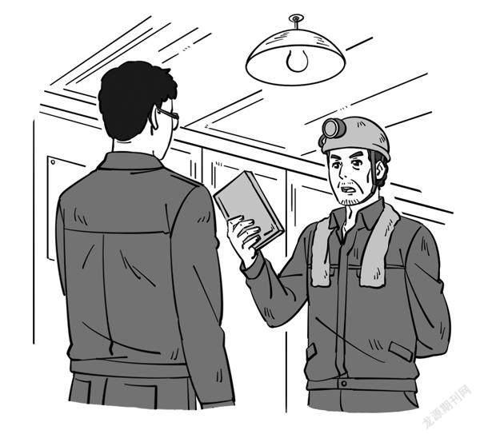
“啊？那、那我该怎么办？”
“就像这次，师傅知道你遭到了误解，一时又无法说清，不如试着先保持沉默，时间会证明一切。”这是我认识师傅以来，他对我讲得最多，也是最深刻的一段话，我若有所悟地点了点头。“现在，大家都知道你把书弄丢了，以后就别拿到班上来看了。”说着，师傅从怀里掏出一本书递给我。
我低头一瞅，正是那本丢失的《柏杨谈男女情爱》。原来，这书是师傅有意藏起来的呀！
（发稿编辑：曹晴雯）
（题图、插图：陶 健）
东方夜谈¶
一 秒钟¶
江贺
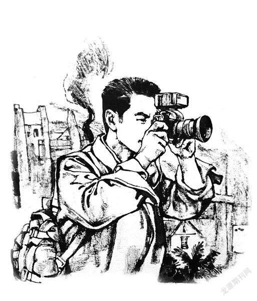
上大学时，秦奋迷上了打游戏。挂科太多，他索性退了学，终日宅在家中打游戏，彻底当起了啃老一族。
今天，要不是游戏账号被盗，必须本人去游戏公司现场找回，他打死也不会下楼。
马路上车来人往，秦奋只顾低头看手机。过马路时，一个小女孩迎面跑来，和秦奋擦肩而过。秦奋下意识回头看了看，发现有辆转弯的汽车疾驶而来，和小女孩近在咫尺。他脱口而出：“危险！”然后飞奔过去，推了小女孩一把，把她顶出几步远，秦奋自己却被汽车重重地撞飞了出去。
当秦奋再次醒来，发现自己身处一片光芒之中。一个威严的声音从头顶传来：“秦奋，你本该宅死家中，但你因为一秒善念，救下一人，行了大善。特批准你复活，并奖励你一秒钟时间。”
“复活我懂，奖励一秒钟是什么意思？”
“你可以随时回到过去任意一秒，改变这一秒钟里发生的事。比方说，‘让我回到昨天出门前一秒，然后决定不走出家门。记住，这个神技，只能用一次。”
“就是回到过去呗？可一秒钟也太短了，能不能再多给点？一天行不行？一小时也行呀！”
“嫌少？你知道一秒钟做出的决定，能改变多少事吗？”
秦奋想追问，但眼前一黑。当他再次醒来时，已躺在家中床上，手心多了一道“1”字的印痕。秦奋明白了，这一切都是真的。
那么该如何使用这一秒钟呢？
秦奋痴迷战争类游戏，他小时候还曾做过战地记者梦呢！秦奋想，为何不去真实的战场上体验一番？遇到生死危险，直接回到出发前一秒，取消出行，不就行了？
越想越刺激，秦奋立即在网上寻找各种能去战场的办法。他看到一则招聘广告，工作内容是为非洲达瓦记者团开车。
达瓦正处内战状态，是秦奋梦寐以求的战场呀！他立即投出简历，没想到很快就被录用了。
秦奋自以为幸运，但哪知道，要不是此前一名记者被流弹击中罹难，很多人为此离职，导致急缺人手，这工作怎么可能轮到他？报社详细介绍了工作的危险性，但秦奋一心想要体验“真人战场”，便急不可耐地随团前往达瓦。
当秦奋来到达瓦后，他被眼前的景象驚呆了——到处都是被炮火摧毁的残垣断壁、烧焦的汽车以及时不时响起的枪声。现实和想象中截然不同，秦奋十分恐惧，一度连方向盘都抓不住。幸运的是，他碰到了一位好大哥，老梁。
老梁宽厚善良，有多年战地经验。他注意到秦奋很紧张，便主动搭讪，来缓解秦奋的焦虑。
老梁细致地教秦奋在战区如何开车、怎么选路线、注意哪些危险等等，还会亲自示范驾驶。
时光飞逝，一个月的任务圆满完成，秦奋竟依依不舍。就在登机前一天，记者团得到了采访达瓦叛军首领的重要任务，但叛军只允许一名记者和一名随行人员前往。启程在即，大家都想平安回家，谁都不愿冒这个险。
当天夜里，老梁找到秦奋，酒过三巡，他郑重地问秦奋：“小子，敢跟我去不？”
秦奋犹豫了。这次采访非同寻常，有极大的生命危险。最终，帮他下定决心的是“一秒钟”——后悔了，就回到此刻，说“不敢”！
就这样，两人踏上了采访之路。起初路程还比较顺利，但随着目的地临近，荷枪实弹的叛军越来越多，震耳的枪炮声和爆炸声也越来越密集。久经战场的老梁都是一头冷汗，更不用提秦奋了。
经过艰难跋涉，再步行翻过一个小土坡就到了与叛军首领约见的大楼。就在距离大楼一百多米远的时候，一团火焰从大楼各个窗户猛然涌出，紧接着巨大的爆炸声夹杂着无数建筑碎片冲击而来，将两人直接掀飞。
当两人缓过神后，发现附近出现大量政府军和叛军，双方正在激战。秦奋立刻连滚带爬地拉起老梁就跑，老梁不幸被弹片击中，鲜血不住地流淌。
秦奋二话不说，直接背起老梁，可他没想到，老梁竟然用一种既痛苦又兴奋的表情大喊：“别管我！我得拍照！”
“活命要紧，赶紧跑！”
“不行，这场面太难得了，我是记者，必须记录这一刻，不然我会后悔一辈子！”
“以后还有机会！先撤吧！”
老梁坚决地说道：“机会错过就不会有了！要走你走，不拍下这一时刻，我死也不走！”说着，老梁已蹒跚地向高处挪去。
炮声“隆隆”，秦奋本想一走了之，但不忍心丢下老梁。两难之间，秦奋又想到了“一秒钟”——大不了死前回来，说“不敢”！
于是，秦奋将老梁拖到隐蔽处，他抢过相机向高处跑去，对着战场就是一通猛拍，然后飞快返回，带着老梁开车火速逃离。
秦奋冒死拍下的照片，拍摄时距离交火现场咫尺之遥，无意间抓拍到子弹朝自己飞来的那一瞬间，视觉效果十分震撼，因此获得了战地摄影大奖。
战场上目睹的生死，和从未体验过的被人认可，让秦奋暗自决定，成为一名真正的战地记者。
在此后炮火连天的职场生涯里，秦奋总是冲到最危险的地方。不知不觉，他的人生蜕变了……
转眼几十年过去了，秦奋离世前，天空中再次传来那个神圣的声音：“你还有一秒钟时间没有使用。”
“我放弃。”
“为什么？这可是很多人梦寐以求的神技。”
秦奋微笑着说：？“因为有了这一秒钟的机会，无论多难、多危险的事我都敢去试，实在不行，可以重来。这一秒钟太珍贵，因此我一直不想浪费。我已经认真对待了人生的每一秒钟，没什么可后悔的了……”
（发稿编辑：陶云韫）
（题图：谢 颖）
3分钟典藏故事¶
作家的办法¶
五一
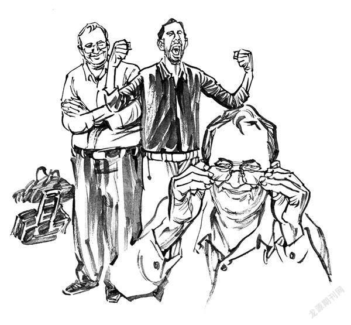
据说有一次，作家茨威格和朋友一起旅行。路上，朋友抱怨说行李太多，不方便。茨威格便說：“你只要带几样必需品就行了！”对方为难地说：“问题是，我感觉每一样都是必需的。”茨威格示意：“需要我帮忙？”见朋友点头，他立刻拿起对方的行李，丢进了海里：“好了，现在我陪你去商店，买你需要的东西。”
朋友惊呆了，但也只能强忍愤怒，与茨威格一起去商店买了几件必需的日用品。奇怪的是，东西虽然少了，朋友却并未觉得不妥，甚至觉得格外轻松和方便。
还有一次，有个年轻人请茨威格指导一篇习作。茨威格读完后评价道：“整体框架不错，但文字过于啰嗦。”他举例说，小说中有个人物遇到危险求助时说了一大堆话，十分多余。年轻人听了建议，却一脸迷茫，表示无从下手。
茨威格问年轻人：“你会游泳吗？”年轻人摇摇头，茨威格猛地起身，把年轻人推进了身后的泳池。年轻人拼命挣扎，不断叫嚷：“救命，救命！”茨威格将年轻人救上来后，笑着说：“你笔下的人物在遇到危险时，应该和你的反应一样。”年轻人这才恍然大悟。
好的作家会观察生活，往往有足够的积累，才会有独到的智慧。
（推荐者：潘光贤）
一个红色按钮¶
乔凯凯
年轻的阿凯在一家工厂里做维修工，主要负责维修控制器。
那天，阿凯发现控制器上的一个红色“急停按钮”的外壳坏了。这维修起来相当简单，只要换个新的按钮外壳就行。因为一时没有找到红色按钮的备件，阿凯随手拿起一个绿色的按钮装了上去。他想，送零件的工人一个小时后就会来，等有了红色按钮，再换上也不迟。
可是谁也没有想到，意外发生了。一名工人在卸料时，突然发现行车刹车失效，他必须尽快按下“急停按钮”。但那时，控制器上只剩下了另外一个红色按钮——那是磁性吊具的切断按钮。工人根本来不及思考，只是本能地去按下了那个代表“停止”的红色按钮。然后，被吊起几米高的钢板，因为吊具磁性被切断，从上面重重摔落下来……幸运的是，原本站在那里的另一名工人刚好转身离开，钢板几乎擦着他的肩膀而过！
一切发生得太突然，阿凯吓得像断了魂，差点连气都喘不过来。
從此，阿凯有了心理阴影，最终选择离开了工厂。这件事也一直警醒着他，任何时候都不要存在侥幸心理，哪怕只是很短的时间，哪怕只是一个小小的红色按钮。
（推荐者：田龙华）
画妈妈¶
卜庆萍
芸是个品学兼优的学生。有一次，学校组织给困难学生募捐，同学们纷纷拿出自己的零用钱，5元、10元、20元……芸呢，竟一次捐了800元。老师疑惑地看着她，芸却说：“这是我自己的积蓄，和妈妈商量过的。”于是，同学们都猜想芸的家里一定很有钱。
后来，为支援地震灾区，学校又组织了一次捐物活动。有的同学捐出了精致的铅笔盒;有的捐出了自己舍不得穿的新衣服;芸则捐了一只精美的玉镯。这一次，老师看着贵重的玉镯，只是轻描淡写地问了一句：“为什么要捐玉镯呢？”芸说，玉镯是妈妈的，现在用不着了。老师和同学们心领神会，一定是芸的妈妈出手阔绰，买了新的，旧的自然也就不需要了吧。
那天美术课上，老师让大家“画妈妈”，强调说，一定要把妈妈的特征画出来。同学们迅速完成了画作，唯独芸还专注地画着。只见芸蘸了一下颜料，轻轻地在妈妈伸开的手掌上涂了几个厚重的红点……老师和同学们一头雾水。芸说：“这些年，妈妈一直干零工，为了多赚点钱养家，现在当上了搬运工。这些红点就是妈妈手上磨出的血泡。”
教室里顿时鸦雀无声，静得只能聽到大家心跳的声音。
真正令人瞩目的光彩，并非财富的金光，而是来自心灵的光芒啊！
（推荐者：晓晓竹）
（本栏插图：陆小弟）
（题图、插图：陆小弟）
外国文学故事鉴赏¶
兰花养成记¶
【英】阿瑟·克拉克
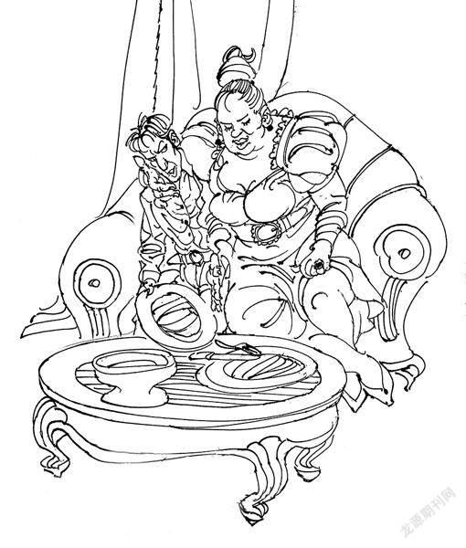
赫拉克勒斯·基庭是一个老实的小职员，父母为他起“赫拉克勒斯”这个名字，是希望他像古希腊神话里大力神那样健壮。但现实不尽如人意，赫拉克勒斯·基庭个头只有一米五，九十斤不到，整个人看上去瘦小干枯，像只笨鸡。
赫拉克勒斯不喜欢社交，他真正的“朋友”，就是他温室里的那些植物。他特别擅长种兰花，在花卉养殖圈里声名远播。
亨丽艾塔姑妈，是赫拉克勒斯唯一在世的亲人。姑妈身材壮硕，足有一米八高，酷爱抽雪茄。她养了许多猎犬，看上去条条凶猛无比。
姑妈瞧不起男人，至今未婚。但是她很喜欢赫拉克勒斯，几乎每个周日都会来看他。赫拉克勒斯很害怕姑妈的来访，害怕她的粗声大气，害怕她那足以捏碎掌骨的大力握手，害怕她总是用一种居高临下的姿态俯视着自己。久而久之，他恨死了姑妈。
渐渐地，赫拉克勒斯再也没办法压抑自己的恨意，他经常处于想谋杀姑媽的边缘，尽管他知道，自己下不了手。
这天，赫拉克勒斯收到了新买的、来自“亚马孙流域”的兰花。刚拆开包裹时，它是那么不起眼：一团乱蓬蓬的根，拳头大小，还有一股腐烂的味道。
这株兰花长得飞快，没多久，便长出了成人手臂粗细的枝干，枝干顶部还生出一圈奇怪的凸起。
赫拉克勒斯兴奋地叫起来：“我敢肯定，发现了一个全新品种！”兰花长势令人称奇——很快，它就比赫拉克勒斯还高了，连那一圈凸起物也在生长，好像随时随地都会开花。一天晚上，他正给兰花浇水、松土，注意到一个奇特的现象：兰花的八条蔓藤正在变粗，并且开始抽动，仿佛拥有了生命。几天后，这一现象更加明显。每当他接近兰花，蔓藤便会摇摇晃晃地伸向他，显出强烈的饥饿感。赫拉克勒斯估算着触手的长度——他已经改口叫它“触手”了，小心翼翼地走到安全距离以外。这株兰花更像是动物，而非植物王国中的一员。
这也太荒唐了吧！现实生活中怎么可能发生这种事？赫拉克勒斯决定来做个试验。他走进屋子，几分钟后返回，手里拿着一根扫帚柄，顶端戳着一块生肉。兰花的两条触手不安地躁动起来，开始前后摆动，突然，触手迅速扬起，速度之快，令赫拉克勒斯眼前一花。它们缠住生肉，赫拉克勒斯只觉木棍顶端传来一股巨大的拉力。接着，肉块不见了——兰花紧紧地抱着它，如果打个比方，就像饿鬼把肉护在胸前。
“我的天呀！”赫拉克勒斯吓得大叫起来。
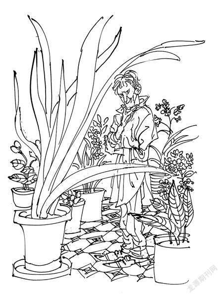
接下来二十四小时，兰花等待肉块变质腐烂，同时生长出自己的消化系统。第二天，一套形似须根的网状茎蔓包裹住隐约可见的腐肉……到了晚上，肉块不见了。
兰花第一次尝到了血腥味。
赫拉克勒斯心情复杂。兰花已长得十分粗壮，如果被它抓住就完蛋了。为此，他设计了一套浇灌系统，可以在安全距离之外为它浇水。现在，兰花每天能吃一磅肉。令人不安的是，兰花的胃口越来越大。
兰花已长到一米八高，而且还在长——只是长势比从前慢了。
显然，兰花已经发育出一套高度完善的神经系统，它知道什么时候有人来喂食，还会表现出兴奋的样子。最神奇的是，它还能发出难以置信的高亢哨音。
赫拉克勒斯一边研究有趣的发现，另一边要应付姑妈和那群大猎狗。尽管对姑妈的厌恶与日俱增，可每个周日，他都会谦卑地为她奉上茶点，两人坐在一起亲切地聊天。从表面上看，他们亲密无间。姑妈绝对想不到，赫拉克勒斯为她倒茶时，恨不得在茶水里下毒。
又是一个周日深夜，姑妈开车的轰鸣声在夜色中渐渐远去。赫拉克勒斯回到温室，盯着那株兰花，那触手已有成人大拇指粗细。他决心，要好好训练这株植物。赫拉克勒斯制定了一个“斗牛士”方案：他把肉挂在钓鱼竿上，在兰花势力范围之外摇晃，引逗它疯狂地探出触手。毫无疑问，这家伙已经非常强壮，足以对付任何猎物。它曾把赫拉克勒斯手中的扫帚柄一把抢过，似乎没用多少力气，木棒便在一阵“喀嚓喀嚓”声中断成几截。
赫拉克勒斯想，他的“斗牛士”战术已把兰花的捕猎激情调动起来，接下来，该让姑妈上场了。在计划付诸实施前，他先把兰花饿了两个星期，让猎杀行动更有保障。然后，在一个周日下午，他端着茶杯回到厨房，看似漫不经心地说：“姑姑，我想带您去看样东西。我一直保密，就是想给您一个惊喜，您看了一定会高兴死的。”
姑妈把雪茄从嘴边拿开，眼睛看着赫拉克勒斯，惊讶地说：“好啊！见证奇迹的时刻到了！你搞到什么好东西了，小坏蛋？”说着，她一巴掌拍在他后背上，把他肺里的空气全震出来了。
“你永远不会猜到。”赫拉克勒斯喘过气来，“在温室里。”
“哦？”姑妈一脸迷惑，跟在赫拉克勒斯身后。
天色已然黑透，温室里没有灯光。两人走进温室，姑妈抽抽鼻子：“这地方臭得跟屠宰场似的。”
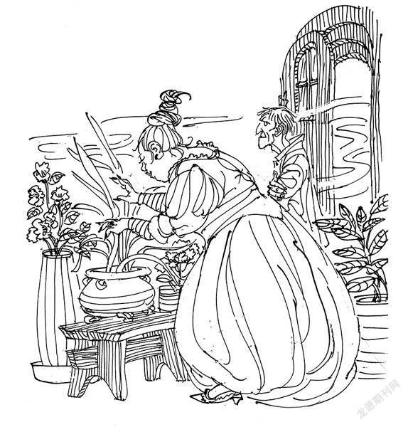
“不好意思，姑姑。”赫拉克勒斯一边道歉，一边推着姑妈朝黑暗深处走，“我用了新型肥料，效果惊人。希望这是真正的惊喜！”
赫拉克勒斯等到姑妈走进危险地带，他一下子点亮了电灯。灯光骤然亮起，姑妈站在那里，两手叉腰，面前便是那株巨大的兰花。
足足五秒钟之后，兰花终于动了。悬垂的触手快如闪电，没有向前伸出，却紧紧地将自己缩成一团——同时发出一声高亢的尖叫，声音中充满了恐惧。
一瞬间，赫拉克勒斯见识到丑陋的真相，他的梦想破灭了。他的兰花是一株彻头彻尾的胆小鬼！突然出现的亨丽艾塔姑妈让它吓破了胆。
姑妈还在惊讶地看着兰花，她指向她的侄子：“赫拉克勒斯，这可怜的小东西连想死的心都有了，你是不是欺负它了？”
赫拉克勒斯只好低垂着头，满脸羞愧和懊丧：“没……没有，姑姑，我猜它天生胆小。”
“好吧，驯服动物我在行，你早该叫我来了……”姑妈温柔地安抚着那株兰花，轻轻拍打，缓缓抚摸，直到它的触手放松，刺耳的尖叫声平息下来。
从那天起，赫拉克勒斯垮了。更糟的是，姑妈把兰花当作了自己的新宠物，她不再满足于周日才来，而是一周要来两三次。她还带来了许多好吃的，兰花喜欢得不得了。
赫拉克勒斯，却渐渐麻木，越来越像植物——准确地说，越来越像一株兰花了。当然，是那种老实无害的品种。
（改编：守 白）
（发稿编辑：陶云韫）
（题图、插图：佐 夫）
民间故事金库¶
我是你爹¶
雨童先生
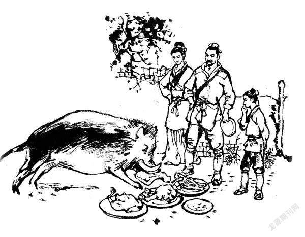
从前，树林里有一头神奇的野猪。说它神奇，是因为它会说人话，不过，它只会说一句：“我是你爹！”
原来，有一天野猪在树林里闲逛时，遇见两个樵夫在吵架。一个骂：“我是你爹！”另一个回：“我是你爹！”两人互骂了十几个回合，后来见太阳快落山了，方才气咻咻地挑着柴各回各家。
野猪不明其意，只觉得两人说话时叉腰摆手的样子很有趣，便记住了那句“我是你爹”。
野猪一开始说得“哼哧哼哧”的，学得并不像。后来干脆变成口头禅，时间久了，便越说越像人话。因了这句“我是你爹”，这头野猪在树林里的地位可谓青云直上，还赢得众多母猪的芳心。
正所谓“人怕出名猪怕壮”，由于经常抛头露面，野猪很快就被猎人瞄上了。有一天，它一时疏忽，掉进了猎人事先挖好的陷阱。
野猪在深坑里声嘶力竭地喊：“我是你爹！”可惜它的同伴早逃得无影无踪，谁也没听见。
獵人听见了，也看见了。他吓得脸色煞白，心想：我爹过世不到一年，难道转世投胎变成野猪了？他半信半疑，便冲着陷坑里的野猪问：“你真的是我爹？”
野猪仰着脖子回了一句：“我是你爹！”
猎人大叫一声：“哎呀，真的是我爹啊！”他慌忙跑回村里，喊来几个村民帮忙。众人小心翼翼地将野猪从陷坑里救了上来。
野猪见大家如此友善，倒也配合，那雄赳赳气昂昂的样子，便越发像个“爹”了。就这样，猎人恭恭敬敬地用板车载着野猪，一路气喘吁吁地拉回了家。
晚上，猎人为投胎成猪的“父亲大人”准备了丰盛的大餐，鸡、鸭、鱼、肉，应有尽有，还开了一坛藏了多年的好酒。野猪蹲坐主位，满意地说了句：“我是你爹。”说罢，便不管不顾地大吃大嚼起来。猎人和妻儿见野猪那风卷残云的架势，面面相觑。猎人眼眶一红，心想：父亲打了一辈子猎，到头来反而变成一头野猪，看来这就是报应啊！这么一想，猎人便有了放下猎弓、金盆洗手的打算。
此后半年，野猪便一直在猎人家享清福，被好吃好喝地供养着。时间一久，猎人的妻子终于有了怨言。别的不说，野猪吃喝拉撒全在屋子里，搞得家里整天臭烘烘的。妻子常在背后骂：“什么狗屁的爹，变成猪了还回来折磨我们！”
其实猎人心里也不是滋味儿。自从把“猪爹”请回家后，他就再也不敢去打猎了，怕遭报应。可是除了祖传的打猎手艺，其他活儿，他也干不成，家里生计便渐渐成了问题。
一日，猎人挑了柴去街上卖，突然有人一把拉住他。猎人一看，原来是城里张员外家的老管家。老管家把猎人请进街边一家茶馆，刚一落座，便开门见山地问：“听说你家有一头会说人话的野猪？”
猎人忙说：“那不是野猪，是我爹！”老管家笑道：“我知道那是你爹……现在有一笔买卖，就看你想不想做？”
猎人眼前一亮：“啥买卖？”
老管家说：“把那头野猪卖给我家老爷。”猎人听了直摇头：“卖我爹？那可不行！”
老管家不说话，只伸出一个手指头。
“十两？”猎人心中一动。
老管家微笑着摇摇头，一字一顿地说道：“一百两！”猎人吓了一跳：“一……一百两银子？”
老管家说：“你这辈子靠打猎，可赚不到这个数！这笔买卖究竟划不划算，你考虑考虑……”
猎人立马把手一挥，说得斩钉截铁：“甭考虑了，我卖！”
“成交！”老管家“哈哈”大笑。就这样，会说人话的野猪被猎人卖给了城里的张员外。猎人送走猪爹时，哭得稀里哗啦：“爹啊，就原谅您的不孝儿吧，我这实在是没法子了呀……”
野猪不明所以，依旧是那句：“我是你爹！”
话说张员外花重金买回野猪，也是“用心良苦”。他是城里出了名的纨绔子弟，吃喝玩乐，大手大脚，家产都快被他败光了。老爹在世时，逢年过节，仗着家里二老的辈分，总还能收些礼金啥的。如今“摇钱树”去了半棵，老太太呢，见老伴过世，伤心过度，也一病不起。万一老娘也驾鹤归西，那这财路就算是断彻底了。张员外心急如焚，眼看着过几日便是老父亲的寿辰，原本又是个生财的好日子啊！张员外恨不得把老爹从棺材里抬出来，没想到，就在他急红眼的时候，听说有猎人捉到一头会说人话的野猪，他便计从心来……
这天，张员外摇醒床上的老娘，兴奋地喊道：“娘，我把爹给找回来了！”老太太一听，眼睛顿时亮了：“你爹在哪儿呢？”
张员外命下人把野猪牵了上来。他早已叫人按着野猪的腰围尺寸做了一身官服，这野猪穿上一身体面的锦绣衣袍，还真的“猪模人样”起来。
老太太见是一头野猪，吓得连忙念“阿弥陀佛”。没想到这时，野猪说话了：“我是你爹！”
张员外连忙应答：“哎，我知道您是我爹，我这不是带您来见我娘了嘛！”老太太听见野猪说了人话，眼珠瞪得溜圆，指着野猪问：“你真是孩子他爹？”
野猪“哼哧”了半天没回应，张员外一见，慌忙想圆场，没想到老太太却抹了一把眼泪，笑道：“是！是我家老爷！虽说模样寒碜了点，但神气还在。还别说，这圆圆润润的模样真有几分当年老爷做官的架势呢……”
野猪可听不懂这些话，它只顾盯着老太太房间桌上的一盘水果，然后径直跑过去，一口咬住一个大苹果，嚼得嘎嘣脆响。老太太看得更乐了：“没错了，真是老爷！以前他爱吃苹果，可总嫌牙口不行，如今如愿了！吃，尽管吃吧！”
自从野猪进了张员外家，就吃香喝辣，活得逍遥自在。老太太呢，精神也好了很多，成天牵着野猪陪她逛园子。
既然老太太都相信了野猪就是转世的老伴，接下来的事也就顺理成章。张员外趁热张罗了老爹的寿宴，不但收了丰厚的礼金，还赚了“孝子”的美名，甚至还因此得了朝廷的嘉奖。
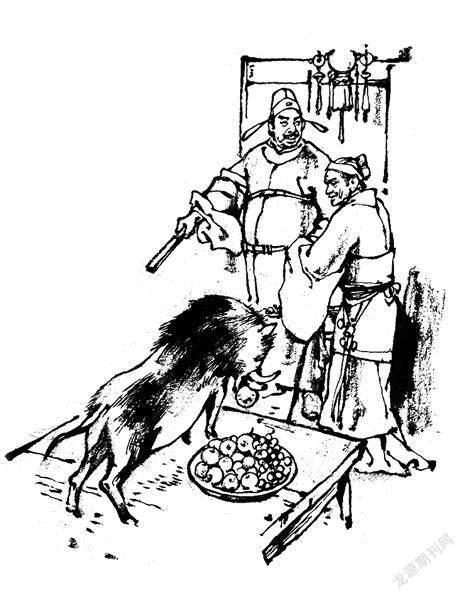
这一连串的喜事，让张员外乐得好几次做梦都笑醒，买来的“猪爹”简直比亲爹还管用！张员外本想着把“猪爹”这棵摇钱树好好供养着，来日方长嘛，可没想到一年后，天下大乱了。
张员外不得不带着一家老小仓皇出逃。临走时，老太太死活要让野猪上她的马车，张员外只得应允。只是路途颠簸，老太太身子受不住，没过几天就撒手人寰，死时她还抱着猪蹄子不放。
安葬了老娘，张员外瞅着野猪横竖不顺眼。这年头，大家饭都吃不饱了，这“猪爹”留着又有何用？不如宰了给家人解解馋吧，毕竟一路逃难，有好些日子没见着肉了。
这天晚上，野猪被张员外家的仆人带到一口大铁锅前，那里面的水烧得“咕嘟”响。野猪一直被人服侍，早失了戒备心。它瞅着一锅热水，以为仆人和以前一样要给它洗澡呢！哪知仆人突然抽出一把刀，二话不说刺进猪脖子。
野猪撕心裂肺地喊了一声：“我是你爹！”
（发稿编辑：丁娴瑶）
（题图、插图：谢 颖）
网文热读¶
龙虾复仇¶
伍迪.艾伦
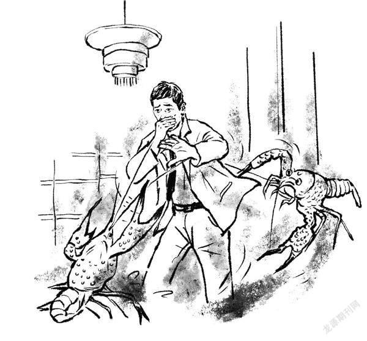
兩周前，莫斯科维茨死于心脏病，然后转世成一只龙虾。他在缅因州的海岸落网，被运送到纽约一家高档海鲜餐馆。餐馆的水缸里还有几只龙虾，其中一只认出了他：“嘿，莫斯科维茨，是你吗？”
莫斯科维茨说：“谁？谁在和我说话？”突然变成了甲壳纲动物令他莫名其妙。那只龙虾回答：“是我，西尔弗曼。”
“我的天！”莫斯科维茨叫起来，西尔弗曼是他生前的牌友。莫斯科维茨不禁问道：“我的朋友，你知道这一切是怎么回事吗？”
西尔弗曼说：“我们好像重获新生了，只不过成了两只长着钳子的家伙。”
莫斯科维茨叹了口气，他一点儿也不满意自己的现状。他生前是一位受人尊敬的牙医，就算转世重生，也该变成苍穹中翱翔的雄鹰，或是某位性感名媛怀里的宠物，此刻，他却沦为菜单上的一道主菜。
恰在此时，一个中年男人走进餐厅，他身边的女人年轻美貌，浑身珠光宝气。两人在水缸附近的餐桌旁坐了下来。
莫斯科维茨看了一眼男人，立刻惊讶得瞪大了眼睛。他气得大口喘气，尾巴像摩托艇发动机一样搅动着水面。他说：“我不相信，这个骗子不是应该在监狱里服刑吗，怎么还能在这里吃海鲜大餐？”
西尔弗曼说：“这不是马道夫吗？怎么，你也认识他？”
莫斯科维茨强忍住愤怒，说：“我出现在这里，就是因为他。”
莫斯科维茨说，马道夫骗自己投资了一个项目，一开始收益很完美，可后来他的骗子本性暴露了，自己的净资产全没了。收到消息的那一刻，莫斯科维茨心脏病发作，昏了过去。等他再次有意识时，就发现自己变成了一只龙虾。
西尔弗曼感叹道：“我的遭遇也和你差不多，我和马道夫是在打高尔夫球时认识的。他一开始故意拒绝我投资，他越是拒绝，我就越想加入，他终于答应下一个机会归我……得知破产后，我从高尔夫俱乐部的楼顶跳下来自杀了。我不得不等了半个小时，因为前面还排着11个人，都是这家伙的受害者。”
这时，餐馆领班带着马道夫来到水缸前，狡猾的骗子开始琢磨那些浸泡在盐水里的家伙哪个更鲜美，最后他选中了莫斯科维茨和西尔弗曼。领班脸上挂着殷勤的微笑，招呼侍者把两只龙虾捞出来。
莫斯科维茨义愤填膺地喊道：“骗走我毕生的积蓄，还要把我蘸着黄油酱汁吃掉！天理何在？”
西尔弗曼也愤恨地说：“让我们最后一搏吧！”于是，莫斯科维茨和西尔弗曼用尽全力，反复摇动水缸，直到它从桌上滑落，摔得粉碎。周围的人纷纷扭头观看，惊恐的领班对眼前的一幕目瞪口呆。
趁着众人愣神的一刻，两只龙虾冲向了马道夫。西尔弗曼奔向他的脚踝，两只钳子夹住他的脚背;莫斯科维茨则使出浑身力气，从地上一跃而起，一只巨大的螯牢牢钳住了马道夫的鼻子，马道夫痛得大叫起来。餐馆里有些顾客认识马道夫，都开始为龙虾们喝彩。
马道夫怎么也无法摆脱这两只大龙虾，冲出餐馆后，他叫喊着逃进熙熙攘攘的人群。莫斯科维茨把马道夫的鼻尖夹得更紧，西尔弗曼则把他的两条腿抓得伤痕累累。马道夫慌乱之下横穿马路，被一辆疾驰而来的汽车撞了个正着……
马道夫住进了医院，他的后半生都必须躺在床上，再也没法骗人了。而两只复仇成功的龙虾，在怒火熄灭后，用剩下的力气爬到海边，跳进了海湾冰冷的深水中……
（推荐者：艾 可）
（发稿编辑：吕 佳）
（题图：陆小弟）
幻影桥¶
【日】藤泽周平
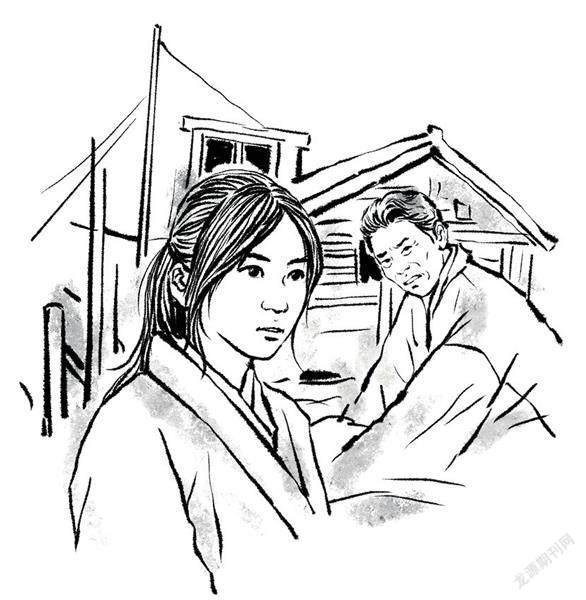
在富川町，有一个叫美浓屋的布料店。布料店老板的养女叫阿江，今年十八岁，刚和布料店的继承人信次郎结婚。
阿江记得自己被遗弃的事——五岁的一天晚上，她被爹带到一座桥上。爹在阿江面前蹲下，说：“在这等着，明白吗？”说罢，爹紧紧地握了握阿江的手，站起来转身过了桥，一次也没回头。阿江一直记得那个背影、那座桥。后来，阿江便被布料店老板收养，被好好地养到了现在。
这天，阿江走在路上，被一个人叫住了。阿江回头一看，是一个五十岁左右、身材消瘦的男人。他笑盈盈地问：“你叫阿江？”
“是……”阿江面向男人，问，“请问您哪位？”
“我认识你的亲爹。”
阿江倒吸一口凉气，她低声问：“他现在在哪儿？”
男人低下头，说：“三年前已经死了，死前他很想见你。”
阿江不知所措地呆立在那儿。男人又小声地说：“他说过，你是被扔在桥边的。我叫弥之助，有空的话来找我，我和你讲讲他的事。”
“我一定过去。”阿江说。
阿江站在原地目送那背影走远，忽然觉得弥之助的背影，与记忆中父亲的背影很相似。
几天后，阿江找到了弥之助的住所，是一间低矮小平房。阿江的来访让弥之助很激动，他手忙脚乱地烧水倒茶，然后给阿江说了她父亲的事：“你爹原先是个木匠。可惜，你娘去世得太早了，他感觉生活没了奔头，日渐消沉，开始去赌钱，陷得很深。”弥之助黝黑的脸上浮现出苦笑，他接着说：“我和他是搭档，做的一件事出了差错，咱俩都没法继续在江户待下去了，只能逃出去。他就是那时遗弃了你。”
阿江感激地说：“和我说了这么多，谢谢您。”
临走前，弥之助关照道：“咱们见面的事，请一定要保密哟！”
接下去的日子，阿江又去了几次那间小屋，为弥之助做飯、洗脏衣服。弥之助每次都感激地看着阿江。阿江和他的相处没有隔阂，天然就很亲近。阿江越来越觉得，弥之助就是自己的亲爹，只是他脸皮薄，不愿承认罢了。
这天晚上，阿江觉得这事不能再瞒下去了，便对丈夫信次郎说：“我最近碰到一个奇怪的男人，他可能是我亲爹。”接着，阿江把事情的经过细细地说了一遍。
“亲爹？”信次郎吃惊得不得了，关照道，“你可要小心一点，忽然来找你，不一定是好事哦。”
隔天，阿江又去了弥之助的住所。阿江做好饭，弥之助不好意思地说：“让你破费，还让你帮忙做饭，实在是说不过去。对了，你没和家人说起我吧？”
“嗯，对丈夫稍稍提了提。”
弥之助紧张地说：“不是说好这件事不能和别人说吗？”
“没关系。”阿江试探道，“我说，我可能遇见了亲爹。”说完，她满眼期待地望向弥之助。
弥之助的脸上现出复杂的神色。就在这时，一个身材肥硕的年轻人闯进客厅，靠着柱子一屁股坐了下来。他默不作声地一直盯着阿江看，阿江感到很害怕。
弥之助用低沉的声音对年轻人说：“赶紧回去！”
年轻人坏笑道：“不行。”
听两人的对话，阿江感到危险逼近，她想偷偷溜走，却一下子被年轻人从身后搂住。年轻人用蛮力控制住阿江，轻轻松松地把她抱起来，拖到了旁边的屋子，一把将阿江扔在榻榻米上。
阿江本能地呼救道：“爹，快来救我！”
弥之助迅速地跑了进来，阿江赶紧爬着向客厅逃去。两个男人扭打在一起，木头房子“吱呀”作响。
弥之助转过头对阿江吼道：“快逃！”阿江清楚地看到，回过头的弥之助面如土色。
“我不会让你轻易逃跑！”年轻人说着，拿出一把明晃晃的刀子，恼羞成怒地说，“别碍我事！滚开，你这讨厌的老头！”
“爹！”阿江哭着大喊。
“我没事，快逃！”弥之助竭尽全力控制住年轻人，对阿江说。
阿江拉开门，逃了出去……
阿江遭遇危险后，信次郎拜托捕快德助调查这件事。
一段日子后，德助上门说：“事情搞清楚了。起因是阿江和闺中密友说了自己小时候的事，什么桥上的背影啦，想知道爹在哪里啦……闺密的丈夫听说了，就想出这个骗局，利用老板娘对亲爹的思念，派人把她引诱过去了，就是那个叫弥之助的大叔。他们打算先骗取老板娘的信任，再找时机绑架老板娘，然后向您这边索要赎金。”
“太危险了！”信次郎叹道。
“是啊，太危险了。老板娘完全中了他们的圈套。”德助说，“但那个叫弥之助的，不知什么原因，没按原计划行动，跟同伙闹掰了，放走了老板娘。”
阿江想：弥之助是我的亲爹吧，否则他为什么要拼命保护我？想到这，阿江追问：“弥之助大叔最后怎么样了？”
“没查到行踪，还在找。”
阿江求情似的说：“他是好人，是他救了我……”
信次郎和德助互相看了一眼，信次郎摇了摇头。
阿江坚持说：“我觉得，弥之助就是我的亲爹。”
信次郎苦笑着，德助也缓缓摇头，说道：“老板娘，虽然没抓住弥之助，但我们已经查到了他的来历。年轻时，他敲诈勒索，坏事干尽，让官府伤透脑筋！他以前有一个老婆，两人曾有一个女儿，但生出来没多久就死了，后来他老婆也死了。所以啊，他对老板娘你说的，当然都是谎话。”
阿江心中充满了苦涩：为什么弥之助最后要冒死救我？在这个上了年纪的赌徒心里，是不是一直渴求着亲情的温暖？
（译者：王了了;推荐者：王世全）
（发稿编辑：陶云韫）
（题图：豆 薇）
法律知识故事¶
白砂糖无保质期也能卖吗¶
刘彦才
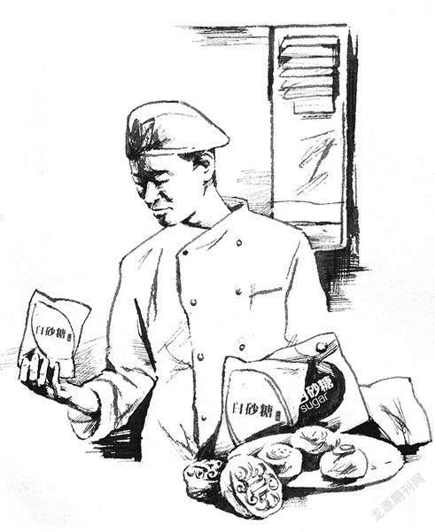
陆某开着一个“糕点作坊”，生产的大多是甜食点心，每年要用掉好多白砂糖。
这天，陆某去批发市场购买白砂糖，由于平时常买的牌子断货了，老板就临时向陆某推荐了另外一个牌子。陆某看了一眼那批白砂糖，和以前买的那种也差不多，而且新牌子价格还优惠一些，他没多想，就付钱成交了。
等把货拉回店里，妻子细看了白砂糖的包装袋，不禁皱起了眉头：“老公，这白砂糖有问题！”
陆某心里一“咯噔”：“怎么了？”
妻子指着白砂糖外包装上的标签，说道：“你瞧，这标签上竟然没有写保质期，是假货吧！这货我们可不能要，万一出点事，要砸我们店招牌的！”
陆某不敢怠慢，赶紧又把几大箱白砂糖运回了批发市场。听说陆某要来退货，批发市场的老板不高兴了：“我在这市场卖白砂糖好些年了，这个牌子的白砂糖我也卖了好多，也没见有客户来退货。再说我这一直有规矩，交易的东西当面点清，过后不退！”
陆某一听，也火了：“你卖这没有保质期的伪劣商品，为什么不给退？不给退，我告你去！”
两个人为此吵闹起来，引来好多路人看热闹。
有个路人上前看了看陆某手里的白砂糖，说道：“这白砂糖外观看上去没啥问题，标签上的生产日期也是最近的。据我所知，白砂糖没写保质期，未必是问题商品。”
“兄弟，你没忽悠我吧？”陆某听得好笑。
路人笑着说：“你要不放心，可以咨询一下有关部门嘛。或者，你还可以跟厂家联系，问问情况。如果是合规经营的厂家，那么这没有标保质期的白砂糖，应该不算伪劣商品，国家对此是有相关规定的。”
这一说法，让陆某和批发市场的老板都听得一愣一愣的。他们一个联系了律师朋友，一个则联系了厂家，不久，竟然都得到了肯定的说法。
厂家出具了相关证明，证明生产的白砂糖是合规合法，符合生产标准的。陆某的律师朋友也在查阅相关法律规定后发现，固态食糖类产品在常温下不易发生化学反应，可以免除标示保质期。
如此一来，陆某放心了，便不再纠缠。
批发市场的老板想起什么，提醒道：“兄弟，我賣了这么多年白砂糖，倒也是第一次了解保质期的事，给你造成困扰，抱歉啦！不过在我看来，白砂糖虽然不易变质，但如果储存不当也难免会出问题，还是尽快食用为好，不要存放过长的时间哦！”
律师点评：
本故事涉及的一个法律问题，即出售白砂糖是否可以不标保质期。
根据国家食品标示管理的相关规定，酒精度大于10%的饮料酒、食醋、食用盐、固态食糖类、味精等食品可以免除标示保质期。
故事中，在确保厂家是合法合规经营的前提下，陆某所购白砂糖无保质期标示，确属“可以”范围之内。需要注意的是，可免标保质期的产品，不代表可以永久保存。消费者在选购此类商品时，应分辨商品的实际品质是否完好，尽量选购生产日期较近的产品，保证存储得当为好。
（发稿编辑：丁娴瑶）
（题图：张恩卫）
中篇故事¶
安全出口¶
罗志莹
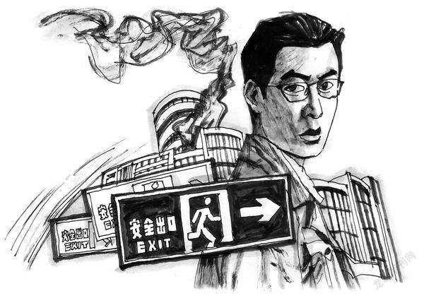
1.字条¶
樊志托醒来时，发现自己在一个密闭的房间里。
樊志托是一名初出茅庐的建筑师，最近这段时间，他一直在参与一家密室逃脱游戏馆的建造。此时，他打量着周围陌生的环境，仔细回忆起来。他记得，自己明明刚才还在快建好的游戏馆里，怎么一睁眼就在这个地方了？
醒来后，樊志托的第一个感觉就是热。这个地方太热了，热得他全身上下都在冒汗，他只好把最外面的棉衣脱掉。这件棉衣是家乡的姥姥寄来的，樊志托平时很爱惜。就是在这样的环境下，他仍把它折好，小心地放在地上，生怕弄坏了。
在陌生的环境里，人的本能是寻找出口。樊志托很快就发现前面有一堵钢门。他想都没想就跑过去，握住门把手，想要把门打开。然而，无论他用什么方法，门都纹丝不动。他声嘶力竭地喊“救命”，却没有任何回应。终于，樊志托意识到，自己是被困住或被囚禁了。三十来岁的大男人，第一次感到离死亡如此之近。他盯着眼前折叠整齐的棉衣，想起家乡的姥姥，眼泪夺眶而出。
迷茫中，樊志托的脑海中浮现出小时候自己和姥姥下棋的情景。每次樊志托想要认输时，姥姥都会让他再好好想一想。一次，樊志托嘟起小嘴，说想不出来。姥姥笑起来，说：“你看。”她在棋盘上落下一子，本来已是死局的白棋瞬间被盘活了。看到姥姥的巧妙落子，小小的樊志托惊讶得张大了嘴巴。
“所以，姥姥经常告诉你……”
“冷静观察，谨慎行动。”樊志托脑中响起姥姥的教导。没错，现在还没到死局，要冷静观察，谨慎行动。
擦去眼泪，樊志托振作起来。他站起身，重新仔仔细细地打量自己身处的地方。这里是一个60平方米左右的密闭房间，房间呈正方形，墙体是常见的钢筋水泥混合物，厚度不好估量。除了那堵钢门，房间内没有其他出入口，也没有窗户。昏暗的室内全靠天花板边缘与墙体连接处的几条灯带照明。
靠着灯带微弱的光线，樊志托依稀看到在房间的一角，有一个黑色隆起的物体。他快步走过去，发现那是一个趴在地上的男人，他穿着黑色的大衣。
樊志托俯下身，探测那人的鼻息——还活着！在险境中发现同伴，就像溺水者找到救生圈，樊志托大喜过望，抓住那人的肩膀，试着摇醒他。
那人没被摇几下就醒了，他醒来后一脸茫然，显然对自己的处境一无所知。他盯着樊志托，愣了片刻，问：“你是谁？”
“我叫樊志托，我们好像是被人囚禁在这里了。”
“囚禁？那不是有门吗？”那人指了指前面的钢门，径直跑向那里。
开门、拍门、撞门、踢门……樊志托看着他重复自己刚才的行为，门还是纹丝不动。那人转向樊志托：“大兄弟，咱也不认识，不带这样玩的……快把门打开吧！”
还没等樊志托解释，那人一拍脑袋，说：“我知道了，你是电视台的！”说完，他自顾自地寻找起隐藏的摄像机来。
被他这么一说，樊志托也想起来，电视台确实有这样的节目，用隐藏摄像机拍摄被捉弄的人的真实反应，听说这样的节目还挺受欢迎。然而，两人在整個房间里搜索了大半个小时，愣是没发现任何一个疑似藏有摄像机的地方。最后，两人都累得一屁股坐在了地上。
“你真的不是电视台的？”那人喘着粗气问樊志托。
樊志托摇摇头：“不是……我倒真希望这是电视台的节目，不然情况就更糟糕了。我们可能真的被囚禁了。”
那人急了：“干吗要囚禁我们？我可是清清白白的啊！”
樊志托摇摇头，叹了口气。
屋里越来越热了，那人抱怨道：“该死，我快热死了！”说着，他把大衣脱了，随手扔在地上。
樊志托下意识地看了看被扔在地上的大衣，那人也看了一眼大衣，突然惊讶地说：“奇怪，谁给我穿上这件衣服的？”
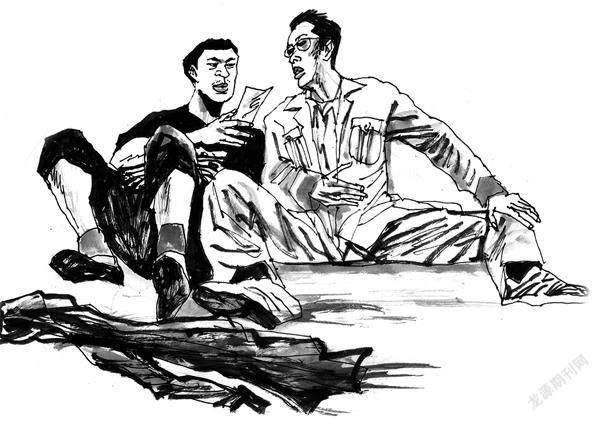
“这大衣……不是你的？”樊志托问。
“不是。”
樊志托疑惑地捡起来查看。这是一件普通得不能再普通的黑色大衣，上面有两个口袋。他把手伸进口袋翻找，从左侧的口袋中翻出了一张字条。
“我猜，给你穿上这件大衣的人，就是为了给你留下这张字条。”樊志托把字条摆在那人面前。
“给我留的，为什么给我留？这上面写了什么？”
樊志托把字条摊开，上面写着：“找到正确的安全出口，门才会打开。”
那人朝四周看了看，疑惑地说：“安全出口？这里哪有什么安全出口……”
樊志托一边思考，一边分析道：“这字条被人故意放在大衣口袋里，而大衣又被故意穿在你身上……很明显，这是一个提示。这个房间里，肯定有安全出口，只是我们还没有找到。”
刚才两人找摄像机时，已经把整个房间都检查过了，确实没有什么安全出口。樊志托见暂时没有头绪，便转向那人，先打探对方的身份，说不定能有新线索。
“你先说说，你叫什么名字，来这里之前在做什么？”
那人双手抱住脑袋，努力回忆：“我叫郑明，是个电工……我记得到这里之前，我在一个快建好的游戏馆里安装电线线路。”
“游戏馆？”
“对，就是玩密室逃脱的那种地方，叫……对了，叫幻境游戏馆，我在装外墙线路的时候看到过。”郑明对这个名字还蛮有把握的。
听到“幻境游戏馆”，樊志托激动地跳了起来：“到这里之前，我也是在幻境游戏馆！”2EFC2801-0F9A-49DC-9D09-47B941EF303A
“什么？”郑明也站起来。
“所以说，我们有可能是从幻境游戏馆一起被抓到这里来的。”
总算知道一点线索了，郑明挠挠头，问：“大兄弟，那你说，这到底是哪里？会是游戏馆里的房间吗？”
“这个不好说。”这里连窗户都没有，根本无法判断自己身在何处。
樊志托又端详起那张字条，这是他们目前掌握的唯一线索了。抓他们来的人，应该是想让他们根据提示逃离这里。但是，既然要囚禁他们，为何又要给出提示让他们逃离，这矛盾的做法有什么目的呢？樊志托想得头疼欲裂。
2.标识¶
郑明突然想到了什么，说：“大兄弟，你说这个提示是故意放我兜里的，那你的兜里会不会也有提示啊？”说着，郑明指了指樊志托放在地上的棉衣。
樊志托觉得有道理，于是两人各自检查了一下自己的衣服，但除了那张字条，再没找到其他线索了。
“唉！”郑明重重地叹了口气，“安全出口，安全出口！这一眼望到头的房间，哪有什么安全出口！”
樊志托也很泄气，但他还是努力冷静下来，思考着各种与安全出口有关的事物。突然，他灵光一闪，每个建筑物中，都会有指示安全出口的标识牌。字条上说的“安全出口”，也许不是指真的出口，而是一个标志性的东西。
樊志托把想法一说，郑明想了想，问：“安全出口的标识牌……是绿色的那种吧？”
樊志托点点头，作为建筑师，他对安全出口标识牌很熟悉：“对，安全出口标识牌一般是绿色的，图案是一个小人往一扇门外跑，旁边还有一个指示方向的箭头。”
郑明向四周张望，说：“可是，这里也没有这样的东西啊！”
“安全出口标识牌，大多都安在墙体下方，离地面30厘米左右。” 樊志托走到一面墙前，用手在墙体下方摸索起来。郑明见了，也学着在另一堵墙壁上摸索。
樊志托在墙体上敲敲打打，突然，他摸到了一块凸起的类似机关的东西：“有情况！”
郑明闻声走了过去。樊志托试着用双手使劲一推，“咔嚓”一声传来，两人不约而同地往后退。声音传来的地方，一块墙体自动回缩，在墙上露出了一个洞。这个洞不是常见的圆形，而是长方形。洞的长边与地面平行，但比地面高出30厘米左右。洞里面很黑，无法探知深度。
樊志托望着洞口，心想：看来要趴下来，慢慢挪动才能进去。“我进去看看。”说完，他脱掉一件衣服，俯身钻进洞里。
“大兄弟……你小心。”见樊志托爬进洞内，在外面的郑明悬起了心。万一同伴有啥意外，自己一个人可怎么办呀！
樊志托小心地向前移动，很快，他的整个身体进入了洞中。这时，他摸索到洞里有一个类似开关的东西。“这里有个开关！”樊志托在洞里大喊。他本想直接按下去，但考虑了一下，还是先退了出来。
倒退着爬出洞口，樊志托对郑明说：“洞里面有个开关，但可能是陷阱。咱们合计一下，待会儿我进去，一按下开关，你就在外面使劲拽我出来，好吗？”
郑明一口答应：“没问题，不过你可要小心。”
樊志托深呼吸了一下，再次俯身爬进洞内。这次，他尽量把手伸长去触碰开关，郑明在后面死死抓住樊志托的双腿，随时准备把他从洞里拉出来。
“我要按了！”
只听“啪嗒”一声，郑明立即反应过来，抓住樊志托的双腿，使劲往外拽。樊志托安全地从洞里出来了，两人都有点疑惑：按完开关，似乎什么也没发生呀！就在这时，两人听到一阵轻微的响声，樊志托四处打量，没有察觉什么变化。
“是上面！”郑明突然喊。
顺着郑明手指的方向，樊志托抬头一看，天哪，像一块大铁板一样的天花板正在快速地向两人降落下来。
“快进洞！”千钧一发之际，樊志托招呼郑明往洞内钻去。两人刚刚先后钻进洞里，天花板便全部降落到了地面上。幸好樊志托反应快，不然两人都已被砸成肉饼了。
樊志托惊魂未定，耳边却传来啜泣的声音，是郑明被吓哭了。其实，樊志托也很害怕，这么惊险的场面，他只在电影里看到过。
樊志托安慰道：“没事了，有惊无险。我们尽快找到出口，离开这里才是最重要的。”
“要真能离开才行啊……我还没娶媳妇儿呢！”说完，郑明反而哭得更大声了。
“走吧，大哥。”樊志托不想在这狭窄的洞内浪费时间。
两人先后从洞中爬出来，站在降到地面的天花板上，朝上方看去。原来，他们所在的空间足有两层楼高。刚才降下来的天花板其实是上面一层的地面。不过，由于上层空间没有照明，两人都看不清上面到底有什么东西。
“看来，我们要随着天花板升上去，才能知道上面有什么。”樊志托回想起刚才自己按了开关下面的那侧，如果按上面的那侧，应该就可以把天花板升上去了。
“那我们赶紧吧。”看到事情有进展，郑明又有了信心。
“不过，我们只能派一个人上去。”
“为什么？”
樊志托说：“因为我们不知道上面有没有升降天花板的开关。”
如果两人都上去了，万一上面那层没有开关，而唯一的钢门又在下层，那就没有人可以在下面操控开关，把天花板重新降下来了。即便钢门打开了，也没法离开。
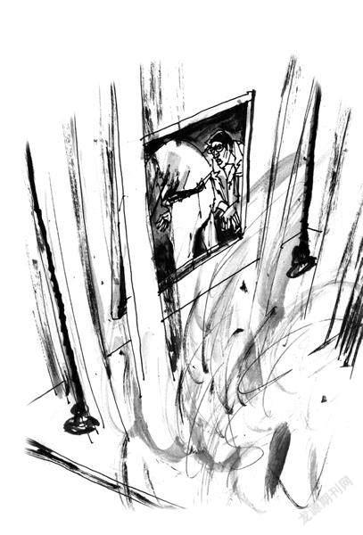
樊志托想了想，說：“上面情况不明，我先上去看看。”
郑明一把拉住了樊志托，说：“大兄弟，总不能每次有危险，都是你冲在前面，这次就换我吧！”
唯一的门在下层，比起上去的人，在下面的人会更安全。樊志托知道，郑明这是在报答自己的救命之恩。他没有再坚持，拍拍郑明的肩膀，说：“小心为上，如果有什么情况，立即大声喊我，我马上把你降下来。”2EFC2801-0F9A-49DC-9D09-47B941EF303A
“行！”
随着开关再次启动，天花板急速向上升起，很快就停在了原先的高度，刚好在墙体灯带上方。
“兄弟，你还好不？”樊志托在下层喊道。
隔着天花板，传来郑明惊喜的声音：“大兄弟，我看到安全出口了！”
“什么？”
“是的，不过不是真的出口，是标识牌……有四个，四面墙上各有一个。”
四个标识牌？听到郑明的描述，樊志托产生了一个想法，他大声对郑明说：“大哥，你还记得那张字条上写的内容吗？找到正确的安全出口，门才会打开。”
郑明环顾着四面墙上的标识牌，每个标识牌上的图案确实有细微的差别。他恍然大悟：“这么说，是要我们从这四个牌子里，找到正确的那个？”
“我想应该是这样。”
“如果找错了会怎么样？”
“可能……我们就没法出去了……”
3.不同¶
一时间，两人都陷入了沉默。过了片刻，樊志托说：“大哥，要不你先在上面找一下有没有开关，可以把天花板降下来。”
郑明说“好”。就在郑明寻找开关的时候，樊志托坐在下层的地上，闭上眼睛，在脑海中回忆安全出口标识牌的样子。在生死关头，即使对平时再熟悉的事物，现在似乎也没有了把握。
不一会儿，上层传来了郑明的声音：“大兄弟，上面没有开关，我都找过了。不过，我看到每个安全出口标识牌的旁边，都有一个通风口，但这些通风口都被网格锁住了，打不开。”
上层没有开关……樊志托看着面前的钢门，暗自思索：安全出口标识牌在上层，这就需要有人留在下面操作开关，让另一个人随天花板升上去，选择正确的标识牌。当选择正确后，下层的这堵钢门会打开。这时，下层的人只要再次按下开关，就可以让天花板降下来，两人一起逃离。但是，还有一种可能：如果，钢门是向里侧打开的呢？
天花板与墙体之间的空间仅有一条灯带的宽度。若钢门向里侧打开，那么天花板就会被钢门挡住而无法下降，上面的人也就无法下来……
“兄弟，怎么样，接下来怎么做啊？”郑明的喊声把樊志托从思绪中拉了回来。
樊志托擦了擦额头上的冷汗，说：“你先下来，我上去看看。”
随着天花板上升，樊志托第一次来到了上层。果然如郑明所说，四面墙上各有一个安全出口的标识牌，每个标识牌旁边有一个被网格锁住的通风口。除此以外，没有别的东西。
樊志托走到通风口前仔细观察。通风口上的网格不是用螺丝钉在墙壁上的，而是用一个长方形的物件来固定的。他不知道这是什么，但似乎能把网格死死固定在墙上。
再看那四个标识牌，每个好像都有点不一样的地方。樊志托镇定下来，大声说：“郑明大哥，我现在要从四个标识牌中选出正确的，你要帮我。”
“行，你说。”
“我先把这四个标识牌的情况说给你听，然后我们再用排除法去掉错误的。我先说我面前的这个标识牌。”樊志托停了一下，继续道，“这个标识牌正中间是一个门框图案，门中央有一个绿色小人，小人是跑步的姿势。门框左侧有一个箭头，门框右侧写着汉字‘安全出口和英文字母‘EXIT。你听清楚了吗？”
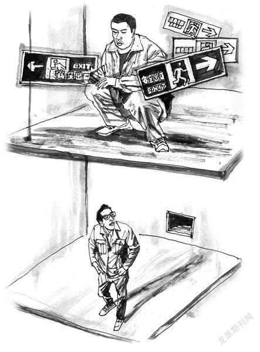
郑明认真地听着，说：“听清楚了。我印象中，安全出口标识就是这样的啊，不过还有另外三个，你继续说。”
樊志托说了声“好”，走到另一堵墙前，说：“第二个标识牌，最大的不同之处是，它的箭头和文字，与第一个的方向是相反的：箭头在门框的右侧，汉字和英文字母在门框的左侧。”接着，樊志托又描述了剩下的两个标识牌。两人很快发现，后面三个标识牌，大体都是一样的;相比之下，第一个标识牌上的箭头和文字位置显得与众不同。
如果后面三个是一样的，那么按照出题人的逻辑，第一个八成是错误的，不然就太简单了。樊志托大声说：“我们可以先排除第一个了。”
郑明在下面说：“但是，后面三个咋整呢？”
“不要急，肯定有一些细节被忽略了，我再仔细看看。”
这相当于在玩“找不同”游戏。由于三个标识牌分别挂在不同的墙面上，樊志托只能一遍又一遍地在几面墙壁之间来回走动，尽力把细节都记在脑海中，然后分别作对比。下面的郑明虽然着急，也只能干等着。天花板完全隔开了上下层两个空间，对于上面的情况，郑明什么也看不到。终于，他忍不住问：“大兄弟，怎么样，有眉目吗？”
上面传来樊志托的声音，听起来有些犹豫：“这三个标识牌里面，有两个看起来是一样的，另一个有细微的不同。”
“什么不同？”
“这个标识牌上，小人右脚下有一个小白点，另两个标识牌上，都没有小白点。”
郑明想了想，说：“那按照出题人的逻辑，不一样的那个标识牌多半也是错的吧？”
樊志托也是这样想的，他说：“对，现在只剩下两个标识牌了。我们要在这两个里面选出正确的那个。但问题是，我看了好多遍，剩下的这两个标识牌是一模一样的。”
郑明抓抓头发：“一模一样？要不你再看看清楚？”
樊志托用手揉了揉酸涩的眼睛，这已经不知道是他第幾次来回于两面墙壁之间了。
“一样，真的一样，没有不同的地方……”樊志托的声音里透出疲惫。就像考试的时候遇到两个相同的选项，他甚至怀疑是不是“考官”笔误，写错考题了。但现在这道考题对应的不是成绩，而是两条鲜活的生命，他不能马虎，必须全力以赴。只有做出正确的选择，才能再次见到姥姥，见到其他爱自己的人……
“大兄弟，你没事吧？”这时，下面传来郑明关切的声音。2EFC2801-0F9A-49DC-9D09-47B941EF303A
樊志托强打起精神，说：“我没事。”
郑明又说：“大兄弟，我想到一点。你看看这两个一样的牌子，箭头指向的地方，是不是都有出口？”
樊志托一时没明白：“出口，什么意思？”
“你想想，安全出口牌子是干吗用的，就是要指明出口的地方在哪里，对吧？你刚才说，标识牌旁边都有一个通风口……那会不会通风口就代表出口呢？”
樊志托心领神会，立即走到两面墙壁前检查。确实，一个标识牌上箭头所指的方向是通风口，但另一个标识牌箭头所指的方向，与通风口的位置是相反的！
“郑明，好样的！你说对了，确实有一个箭头，指的方向和通风口是相反的。”
“太好了！剩下的那个，就是正确的。”
樊志托走到正确的标识牌前。终于到最后一步了，选择正确的标识牌，就能打开门，然后离开这里。他慢慢伸出手，想要去触碰它，但是，具体该怎么做，是要把它拿下来，还是大声地对隐藏起来的人说“我找到了”？还有更重要的一点，如果下层的钢门真的向里侧打开了，那自己还能下去吗？一连串的疑问冲击着樊志托的大脑。
樊志托不想贸然行动，他对郑明说：“大哥，你去看看那堵钢门，检查一下这门是向里打开还是向外打开的。”
郑明有些疑惑，但还是走到钢门前，按照樊志托的指示去检查。过了一会儿，他说：“判断不了啊，门框上没有看见转轴。我连这门是平移的还是推拉的都没法判断……你为啥突然问起这个呢？”
樊志托沉默半晌，说：“因为，如果门是向里打开的，我就没法离开了。”
郑明看了看门，又看了看上面的天花板。他懂了——门如果向里打开，上层的天花板下降时就会被门挡住，上层的人将没法下来通过门离开。他问：“所以，我们两个，可能只有一个人能离开？”
樊志托没有回答，他苦笑一声，疲惫地坐在天花板上。
4.影子¶
天花板再次被降了下来。郑明看樊志托一脸沮丧，想了想说：“大兄弟，你说，我们能不能爬上去取那个标识牌？”
樊志托摇摇头：“我不知道，但可以试试。”
郑明问：“哪面墙上的标识牌是正确的？”
“那边。”樊志托用手指了指。
郑明走过去，观察墙上有没有可以落脚的地方。可惜的是，墙面很光滑，可能为了让天花板顺利升降，四面墙上都没有多余的东西。
郑明叹了口气。过了一会儿，他又想到一个法子，说：“如果我们冲着正确的标识牌，大声说‘找到了呢？”
“试试吧。”樊志托举起手，指着挂有正确标识牌的那面墙壁，大声喊道：“我们找到正确的安全出口了，请打开门吧！”
没有回应。郑明也喊了一次，还是没有回应。看来这样也不行。
樊志托垂头丧气地坐在地上。怎么办？他想离开这里，他想回到亲人身边。在这里待的时间越长，离开的欲望就越强烈。如果一定要用一人的性命去换另一人的生存，自己真能狠下心吗？樊志托下意识地向郑明那边望去，对方显然也在想这件事，原本无辜诚恳的眼神，现在似乎透出了一点狠辣的意味。樊志托立即低下头，他不敢再跟郑明对视，他怕自己的心思也从眼神中泄露出来。
已经建立起默契的两人，现在却互相猜疑。樊志托苦笑着闭上眼睛。
“我要出去，无论如何我都要离开这里！”突然间，郑明大声喊叫。
樊志托眼皮一跳，感觉到对方站起身向自己走来。在对方的双手即将碰到自己的时候，樊志托缓缓说道：“不是这样的。”
“现在只能这样了……”郑明的声音中带着哀求与无奈。
“如果你把我打趴下了，你能确保我在上面会帮你选择正确的标识牌吗？”樊志托直视着郑明，“这个机关设计的巧妙之处就在于，它需要两人互相协助，但同时又必须有一人愿意承担风险。”
是的，樊志托说得没错。上去的人既要承担无法离开的风险，也要帮助下面的人逃出这里。暴力根本无法解决他们目前遇到的困境。
郑明像泄气的皮球一样一屁股坐在地上，抱头痛哭。他哭自己胆小、懦弱，为了活命，居然打算对救命恩人动手。这时，他耳边响起了樊志托的声音： “为了离开这里，我们必须互相协助。我们都有出去的理由，谁也无权决定对方的命运，所以，这个承担风险的人，就由上天来决定吧！”
郑明止住哭泣，问：“什么意思？”
樊志托望向上层，上面黑乎乎的一片，像一只吞噬生命的怪兽俯视着他们。“到底怎样才算‘找到正确的安全标识，我们还不知道，所以从现在开始，我们轮流上去，每人尝试一种方法。如果有一个人的方法对了……那就只能祈祷钢门不会向里侧打开了。”
郑明下意识地看了看上面：“你怎么确定，上去的人不会搞小动作？”
“你是说，上去的人假装已经尝试过一个方法，但实际什么都没做，等另一个人试过各种方法后坐享其成？”
郑明点点头。
樊志托说：“这样吧，上去的人要把自己尝试的方法详细地描述给下面的人听。没有作用的方法就排除掉，下一个轮到的人就尝试新的方法。如果我们两个人都搞小动作，那么大家就都别想出去了。”
樊志托接着说道：“这个方法是我提的，第一次就由我来吧。如果我失败了，第二次就轮到你，以此类推。”
郑明闭上眼睛，思索片刻，说：“现在没有别的办法，就这样吧。”
“事不宜迟，我们开始吧！”
樊志托再一次回到上层。这次目标很明确，他走到那个正确的安全出口标识牌前，準备尝试自己想好的第一个方法——把它拿下来。
“郑明，我现在准备把标识牌拿下来，你仔细留意钢门有没有打开。”
“好，我会一刻不停地盯着它。我希望你的猜想是错的，门不是朝里开的……”
“希望如此。”樊志托走到那个选中的标识牌前，缓缓伸出手，准备把它拿下来。动手前，樊志托在脑海中幻想着做完这一切，下层的门打开了，他跟郑明像风一般逃离这里，这是多么美妙的梦啊……2EFC2801-0F9A-49DC-9D09-47B941EF303A
与此同时，下层的郑明也紧张得不行，心都快要跳出来了。他站在钢门边上，期望听到门打开时发出的“咔嚓”声。突然，他听到樊志托大声说：“不对！”
郑明以为自己幻听了，毕竟自己生理和心理的承受能力都已到达极限，但接着，他听到樊志托连续喊了好几声“不对”。
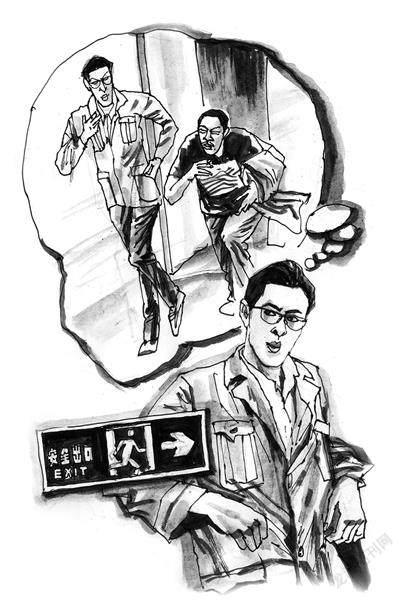
“什么不对？”
“我们可能选错了标识牌。”
郑明不明白：“你说什么？”
“有好消息和坏消息，你先听哪个？”
“樊志托，这个时候了，你还开玩笑？”
“我沒有开玩笑。好消息是，我还没把错误的标识牌拿下来;坏消息是，我们得重新选标识牌了。”
听到好消息，郑明悬着的心放下了，还好，还有出去的希望，但是疑问随之而来：“你怎么知道我们选错了？”
樊志托说：“因为‘出口二字。安全出口，标识的是出口。门框中间的小人，肯定是向外走才对。但是，我们刚才选择的那个……小人是向内走的。”
郑明倒吸了一口气：“什么意思？你说清楚点。”
樊志托整理一下思路，缓缓说道：“还记得我们第二次用排除法吗？剩下三个标识牌，有两个是一样的，小人脚下都没有小白点;还有一个标识牌，则与之相反，小人脚下有一个小白点。”
“关键就是那个小白点！我刚才突然想到，这可能不是普通的小白点，而是代表小人的影子。门外是光亮的地方，门外的光线照在小人身上，就会在脚下投下影子，这样就能确定小人是往外走的。”
“如果小人脚下有影子的标识牌意味着往外走，那我们原先选择的标识牌，小人脚下没有影子，一定就意味着小人是往内走的！”
郑明恍然大悟：“原来是这样……”
樊志托深吸了一口气：“现在，我去把正确的标识牌拿下来。”
“等一等！”
“怎么啦？”樊志托停下，疑惑地问。
过了好几秒，郑明才说：“大兄弟……谢谢你。”说罢，他没有再吐出一个字，千言万语都汇聚到那三个字里面了。
樊志托领会到了郑明想要向他传递的意思，嘴角不由得露出一丝苦笑，伸手把挂在墙上的安全出口标识牌拿了下来。
5.火灾¶
几乎是同时，两人耳边各传来沉闷的声响。
“打开啦，门打开啦！”郑明激动地朝上面喊：“大兄弟，门是朝外面打开的！我现在就把你弄下来。”
樊志托却在上面说：“奇怪！”
“什么奇怪？”
樊志托说：“这个通风口怎么也打开了？”
“你说标识牌旁的通风口？”
樊志托说：“是的，只有我拿下来的标识牌旁的通风口打开了。”
“别管了，出去要紧，我一刻都不想待在这里了。”说罢，郑明立即爬进洞内，按下开关，把樊志托从上层降了下来。
待樊志托站稳，郑明便急忙拉着他一起往钢门走去。樊志托走了两步，又停下了：“等一下，我觉得有点不妥。”
“哎呀大兄弟，别老犯疑心病，门都打开了，还能有什么不妥！”
“你再看一下那张提示的字条。”樊志托把字条展开，举到郑明眼前。
“找到正确的安全出口，门才会打开。哪里有问题？”郑明读出字条上的内容，反问樊志托。
“字条上，从来都没有说过，门就是安全出口。”
郑明挠挠脑袋，说：“大兄弟，你是不是犯糊涂了？门不是出口，那什么是出口啊？”
樊志托有些不敢确定，说：“那个通风口……会不会才是真正的‘安全出口？”
郑明不以为然：“谁会放着大门不走，去爬通风口？别想了，字条的谜底我们解开了，门也已经打开，我们别再耽搁了。再耽搁，抓我们来的人说不准又把门关上了。”说完，郑明拖着樊志托就走。
“不，我认为应该从通风口那边出去。”樊志托脚下纹丝不动。
郑明回头看向樊志托，知道没有必要再纠缠，反正门已经打开了，是不是一起离开，是个人的选择。他说：“行，大兄弟，我把你弄上去……你自己当心！”
樊志托见郑明不打算跟自己一起走，便严肃地说：“你应该跟我一起走安全出口！”
郑明向往地看着那打开的门，说：“这一次……我不相信你的判断。”接着，他转向樊志托：“我也希望你是对的，说不定我俩殊途同归……咱们在外面见吧！”说完，他再次爬进洞中，按下开关——“大兄弟，再见了。”
樊志托随着天花板升到上层，他没有马上钻进通风口，而是又等了一会儿。听到下面的脚步声越来越轻，直到消失，樊志托知道，郑明已经从大门离开了。现在这里只剩下自己，再也没有人可以帮他降到下面了。他鼓起勇气，爬进了狭小的通风口……
不知过了多久，樊志托耳边响起呼唤声：“小托！医生，小托醒了！医生，医生快来！”
好饿，好渴，身体像灌了铅一样沉重，樊志托使出全部力气，终于把眼皮撑开一条缝。啊，出现在面前的，是那张时刻思念的脸——姥姥！
樊志托已经从昏迷中醒来几天了，他的身体状况逐渐好起来。这几天，他一有空就打开手机，反复听着几天前的一则新闻——
“下面是特别报道——今天上午10点，位于望海路的一处在建中的密室逃脱场馆发生特大火灾。起火原因疑似与电线敷设不规范有关。事故发生时，两名工作人员被困在现场。经消防大队全力搜救，一人在消防通道内被找到，因肺部吸入过多浓烟，被送至人民医院救治;一人在逃生时不慎触动机关，被困于在建中的密室内，发现时已无生命体征……”
“您好！”病房门外传来声音，樊志托关上手机。来人自我介绍：“我是市公安局刑警支队大队长，我叫王伟。今天来，主要是想向你了解幻境游戏馆发生火灾时的一些情况。只要把当时发生的事情说出来就可以了。”王队长坐在樊志托的病床旁，拿出笔记本，准备做笔录。
樊志托点点头：“好的，我会把知道的都告诉你们。”
醒来后不久，樊志托的记忆就恢复了，火灾发生时的情景历历在目。他讲述了被困后的经历。
王队长一边记录一边问：“所以，你跟郑明在发现被困后，曾经一起逃生？后来怎么又分开了？”
樊志托心有余悸地说：“郑明说，他知道通向大门的近路，但我坚持要沿着安全出口的标识牌走，我们就分开了。”
“明白了，十分感谢你的配合。你的消防意识很到位啊！可惜那天火势太大，导致你吸入过多浓烟。听医生说，你在重症监护室昏迷了好几天。我代表市公安局，祝你早日康复。”
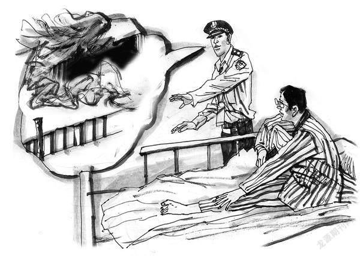
目送王队长离去，樊志托看向窗外。想起火灾中的情景，他仍感到十分后怕。火灾发生时，樊志托正在调试游戏场馆内的设施。藏在衣服口袋里的字条、墙体下方的洞口、能升降的天花板……这些都是密室游戏里的环节和机关。可能火灾对他的冲击太大，才会把现实折射成梦境，在昏迷时做了一个荒唐而惊险的密室逃生之梦……
樊志托醒来后，郑明的脸庞久久萦绕在他的脑海中。对于郑明的不幸遇难，樊志托感到惋惜，同时也有几分自责。当时，如果坚决让他跟自己走，结果或许就不一样了……
（发稿编辑：吕 佳）
（题图、插图：杨宏富）
浮世绘¶
吐蕃人醉氧¶
话说当年，吐蕃人一度发兵攻打到长安，逼得唐朝皇帝落荒而逃。但不久，唐人就发现，吐蕃人进入长安以后，一开始生龙活虎、所向无敌，等过了十几天，他们就变得懒洋洋的，整天像喝醉酒一样，全无战斗力，最后只能撤退。这是怎么回事？据历史学家说，其实是吐蕃人醉氧了。他们乍从高海拔的青藏高原，来到低海拔的关中平原，呼吸到含氧量高的空气，便晕晕乎乎的。当时吐蕃人晕得莫名其妙，以为得罪了神灵，吓得赶紧撤退。
太子洗马是个官¶
明朝时，杨守陈曾任职“太子洗马”。这个官职听着简单，其主要职责是辅佐太子，可不是小官。一次，他回家探亲途中，下榻一处驿站。驿丞看了他的证件，态度轻慢地问：“您是给太子殿下洗马的，一天要洗几匹啊？”杨守陈答道：“心情好的话多洗几匹，心情不好就少洗几匹，没有定数。”正说着，有位御史大人也来了。没想到御史大人见了杨守陈跪倒便拜，问候请安。驿丞傻了眼，知道自己说错了话，赶紧赔罪。
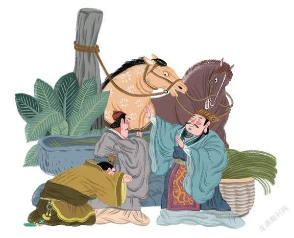
束木为柱¶
李善长与刘伯温同为大明王朝的开国功臣。朱元璋疑心重，觉得李善长贪婪又霸道，打算撤了他的丞相职务。刘伯温听说后忙劝道：“李善长虽有过失，但功劳很大，威望也很高，是能协调各个将领关系的人。”朱元璋故意说：“撤销他的职务，我是要将你任命为丞相的。”刘伯温一听，忙说：“朝廷换丞相，如同房子换梁柱，必须用粗壮结实的大木柱，如果用捆束在一起的小木头为柱子，房屋很快就会倒塌。”听了“束木为柱”的危害性，朱元璋暂时放下了撤销李善长丞相一事。
張作霖与陆荣廷比伤¶
民国时期，两大军阀首领陆荣廷和张作霖在一个会议上碰到了，众人便起哄两位比试一番。时值天空有鸟飞过，陆荣廷举枪便打，飞鸟应声落地。正当大家惊叹时，陆荣廷又甩手向空中打了两枪，却不见再有鸟儿落下。这时，张作霖便指给大家看──原来两根电话线被打断了。
轮到张作霖，他的拿手本领是马上功夫，但附近没有马匹，张作霖便说要和陆老帅比伤。二人当即脱衣扯裤，让人从头至脚点数伤疤。张作霖身上伤疤累累，但没想到陆荣廷的伤疤比他还多。这下，张作霖甘拜下风，对着陆荣廷直喊“大哥”了。
宋太祖的三条玉带¶
吴越国末代君主钱俶，曾向宋太祖赵匡胤进献了一条用犀牛角为饰品的宝带。赵匡胤看了一眼宝带，对钱俶说：“朕也有三条玉带，与你用宝物做的玉带不一样。”见钱俶一脸好奇，赵匡胤大笑着说：“一条为汴河，一条称惠民河，一条为五丈河。”钱俶听完，对赵匡胤的格局大为叹服。
蔡襄的胡子¶
蔡襄是北宋著名书法家，人长得玉树临风，尤其是颔下五缕长髯，迎风飘动，宛如仙人。一次，宋仁宗随口问他：“爱卿这长胡子，睡觉时是放在被子里面呢，还是放在被子外面？”蔡襄一时答不上来，只好说：“容微臣明日相告。”当夜睡觉，蔡襄想着宋仁宗的问话，便一会儿把胡子放在被子外面，一会儿又放进被子里面。就这样他折腾了一夜，竟再也不知胡子该放在哪里了。
欧阳修“吃”书¶
欧阳修喜欢吃鲫鱼脍，京城中只有梅尧臣家的奴仆会做这道菜，欧阳修就经常提着鲫鱼去梅尧臣家。梅尧臣的文集里就有许多关于欧阳修吃鲫鱼的诗文。后来欧阳修离开京城，再也吃不到鲫鱼脍了。一次宴席上，有人问欧阳修爱吃什么。一个宾客抢先说：“他爱吃书。”别人问什么书，那宾客说道：“《梅尧臣集》，里面有许多鲫鱼脍，可以望书解馋也。”欧阳修一听这话，也忍俊不禁。
（供稿：小俊 侯美玲 段修桂）
（本栏插图：孙小片）
我的青春我的梦¶
希望的铃铛¶
孙浩翔
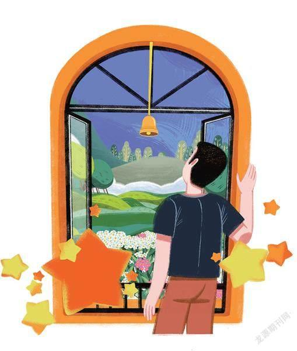
那年暑假，我跟随外公到他当年插队落户的云南去拜访老朋友。长途车在一个简陋的车站停下了，外公带我下车。接我们的人还没到，外公拿起手机联系朋友，我则好奇地四处张望。
突然，有人拽着我的衣襟叫道：“哥哥。”我皱皱眉，回头一看，眼前是一个小姑娘，高高的鼻子，深陷的眼窝，长长的睫毛，纱裙外罩着一件玫红色的小坎肩。她手里拿着一些小铃铛，哦，她是在向我兜售东西吧？想到这儿，我对她摇了摇手。
“哥哥。”她又叫道，“你是第一次来这里吧？”她的普通话很生硬。
我点点头。她又问：“你是从大城市来的吗？”
“是的，我是从上海来的。”
“你一看就像大城市里的哥哥，是好人。”她甜甜的小嘴很会说。
我不禁哑然失笑，心想，她大概是为了推销东西才这么说的吧？于是我问：“你的东西怎么卖？”
她解下一个铃铛，递给我：“给你，不要钱。”
不要钱？开什么玩笑，我不理她，自顾自掏出零钱包。
她拦住我，认真地说：“真的不要钱。”
“那我也不要。”我干脆地说。不要钱的东西，从另一个意义上来说也可能是最贵的，我可不做这么没谱的事。
这时，外公的朋友来了。我对小姑娘挥挥手，转身向外公他们走去。不料她跟了过来，倔强地把铃铛递给我：“给你。”
我想了想，掏出十元钱递给她。
“不要钱，不要钱！”她连连摆手，着急地说，“这是送你的。”
“为什么送给我？”
“因为你是大城市的哥哥，是好人。”
我笑了，这个理由实在太牵强了。她见我不信，忙解释道：“真的不要钱。我经常送东西给大城市的哥哥姐姐，今天就送给你啦！”
“好，我收下了。”我接过铃铛，上了外公朋友的车。车子发动了，我从车窗里把一张十元钞票丢给了她。
“不要，哥哥！不要！”她举着钞票，跟着我们的车边跑边喊。车轮掀起的灰尘扑到她的脸上，把她的泪痕遮盖起来，然而更多的泪又流了出来，她的脸很快模糊成了一片。
車停了，外公他们都看着我。我承认，在看到她泪水的那一刻我就开始后悔了，后悔且惭愧。我下了车，接过她手中的钱，她立刻破涕为笑。
我说出了心中的疑问：“你告诉我，到底为什么要送我铃铛？”
她笑了：“因为我们希望小学的老师告诉我，我们这里的好多东西都是大城市的哥哥姐姐送给我们的。”
原来是这样！
我想了想，问：“那你喜欢什么？我回家后也寄礼物给你。”
她推却了半天，直到我以不要铃铛“威胁”她，她才羞涩地告诉我，她喜欢文具和书。我记下了她的地址。
从云南回到家，我买了童话集和文具，打包快递给她。一个月后，我收到了她的回信。信中说，她要在希望小学好好学习，长大了，她也要走出大山，看看外面的世界，看看大城市里的哥哥姐姐们。
我把铃铛挂在了窗前。每当微风吹响铃铛，我都会想起那双清澈明亮、充满希望的眼睛。我坚信，终有一天我们会再次相遇，一起摇响这希望的铃铛！
（指导老师：姜 琳）
（发稿编辑：吕 佳）
（题图：孙小片）
情感故事¶
给妈妈一丝光明¶
王乃飞
文靜在街道残联工作。这几天，残联正统计申报残疾人康复救助金的事，接到通知的，差不多都来报了，只差一个叫张俊的小伙子还没报。
文静给张俊家打去电话，接电话的是张俊妈妈。文静一说这事，她就说：“我也挺着急呢，这几天张俊感冒了，我走不开，等我抽个空就来。”
张俊的情况，文静很了解。他是个脑瘫患者，二十出头了，生活还不能自理，妈妈一刻也不能离开，爸爸则要出去打工养活全家。
挂上电话，文静忙起了其他工作。这几天，文静的妈妈住院了，她每晚都要去医院陪妈妈。昨天晚上，文静趴在妈妈床边，一夜没睡好，现在她只得强打精神继续工作。
转眼到了下午，外面的天阴了下来，远处响起隐隐的雷声，办公室里的光线也暗了下来，大家不得不打开了灯。这时候，门被推开了，一个女人匆匆忙忙地进来，说：“好容易出来了，没耽误你们的事吧？”
文静一看，来的正是张俊妈妈，她忙站起来说：“没事的，阿姨，你把张俊安排好了吗？”
张俊妈妈点点头，说：“我把水拿到了他跟前，一时半会儿，他不会有事的。”
文静知道张俊妈妈出来一次不容易，马上拿出申报表格来让她填写。这时，外面的雷声越来越大，下起了瓢泼大雨。突然响起一个炸雷，屋里一下子就黑了，大家都吓了一跳。张俊妈妈的表格才写了个开头，这一停电就写不下去了。
文静安慰张俊妈妈：“说不定过一会儿就会来电的，你先坐坐。”
两个人摸着黑坐下来，外面雨越下越大，却迟迟不见来电。张俊妈妈有些沉不住气了，说：“我还是先回去吧，下这么大雨，孩子一个人在家，我不放心。”
文静劝道：“再等等吧。”
张俊妈妈却说：“孩子最怕打雷了，我得回家陪着他。”
文静不想让张俊妈妈白跑一趟，突然灵机一动，说：“有了，我来给你照明！”
文静拿出手机，打开“手电筒”功能，办公室里立即有了一丝光亮，虽然照亮的面积不大，但在此时显得格外珍贵。
张俊妈妈感激地看了文静一眼，趴在那里写了起来。
可是，张俊妈妈写了没一会儿，文静手机上的手电筒突然灭了，手机也自动关机了。文静这才想起，昨天夜里，自己手机用得太多，电量不够了，今天又忙得忘了充电，这可怎么办呀？
这时，屋里响起了几个声音：“我来为你照明！”“我来为你照明！”好几个手机的手电筒同时打开了，他们是残联的同事们。光亮照在表格上，张俊妈妈感动得流出了泪水。
表格终于填完了，外面的雨还是下个不停。张俊妈妈一放下笔就说：“这回我真得走了！”
文静说：“下这么大的雨，你还是再等等吧！”
张俊妈妈说：“张俊在家里，指不定正着急呢！”她和大家打了个招呼，就离开了。
一个同事看着张俊妈妈的背影，说：“真不容易呀，冒着这么大的雨也要回家。”
另一个同事说：“我妈年纪跟张俊妈妈差不多。要是张俊好好的，现在都能出来工作了。唉，家里有这么个孩子，当妈的真是太辛苦了！”
文静听着同事们的议论，不禁想到了自己的妈妈……
原来，文静的妈妈这次住院患的是急性脑梗，医院已经下了几次病危通知书。医生说，妈妈就是被抢救过来，可能也会成为植物人。白天，哥哥在医院守着，夜里文静去守着。
昨天晚上，文静陪护妈妈时做了个梦，梦见妈妈突然睁开眼了，可是等文静醒来一看，妈妈还是紧紧闭着眼睛。文静是多么希望有奇迹发生，妈妈能看自己一眼呀！为了不影响别的病人，她隔一会儿就打开手机上的手电筒，悄悄照一照妈妈，看看妈妈睁开眼睛没有。一晚上她不知照了多少次，也没看到妈妈睁开眼睛……
文静正陷入回忆中，屋里突然一下子亮堂了——终于来电了。文静第一件事就是给手机充电，她不能让手机关机太久，害怕妈妈那里有什么情况。
过了一会儿，手机能开机了，文静看到一下子蹦出十几条“未接来电”，来电人都是“哥哥”。文静的心一下子提到了嗓子眼，哥哥这时候来电话，还打了这么多次，难道是妈妈出了什么情况……文静的手颤抖着，一时竟然没勇气回拨过去。最后，她咬着牙给哥哥打了过去。
电话通了，就听那头哥哥说：“文静，你的手机怎么老打不通呀？”
文静小心翼翼地问：“哥，有什么事吗？”
哥哥说：“告诉你一个好消息，咱妈睁开眼了，还能说话了，连医生都说这是个奇迹呢！”
文静激动地站了起来，说：“真的呀？”
哥哥说：“妈妈一睁开眼，就说要找你呢……”
文静急忙赶到医院，妈妈一见文静，就攥住她的手，说：“这几天，我觉得自己在黑夜里走，怎么也走不到尽头，可突然间，有一丝光在我眼前闪，隔一会儿闪一次，隔一会儿又闪一次，好像要为我照路。我这才想起来，我得回家了，我的女儿还需要妈妈呀，这样我就醒过来了。”
文静哭了，妈妈这是放不下自己呀！原来，文静在几年前出了车祸，被轧断了一条腿，直到现在还戴着假肢。妈妈为她哭干了泪，操碎了心。一年前，文静考入本地的残联，有了工作，妈妈的心才放下了一点。
天下的妈妈对孩子都是放不下心的，特别是残疾人的妈妈。张俊的妈妈和文静的妈妈，都放不下自己残疾的孩子。
（发稿编辑：吕 佳）
（题图：孙小片）
幽默世界¶
一个字一万块¶
张国心
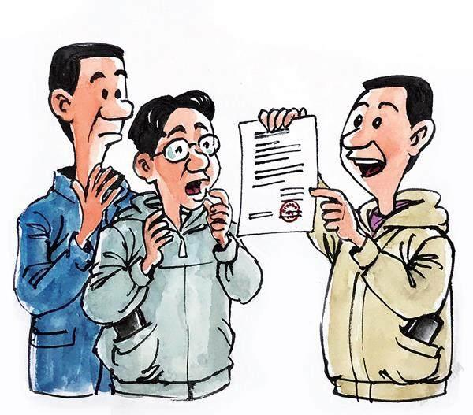
这天，一个爆炸性消息在村子里传开了：陈二表在景区写的字，一个字一万块！
陈二表确实一直在练习书法，但谁也没想到，这家伙居然自学成才了。俗话说，穷在闹市无人问，富在深山有远亲，当天就有几个好哥们登门祝贺。除了祝贺，他们还有更重要的来意，就是借钱。
“二表，我盖房还缺点木料钱。借我点，不用多，三个字就行。”口一开，接二连三地有人接茬，有的说买老牛还缺两个字，有的说做买卖还差一个字，实在不行，半个字也中。陈二表却说：“谁说我一个字一万块？一块钱都没人要。”他这显然是推脱搪塞。
见陈二表这副德行，哥们几个都不高兴了，纷纷谴责他：“发达了就忘了好哥们，借给我们几个字算啥？”“好哥们就该有福同享有难同当，能像你这样吗？”
陈二表被骂得狗血喷头，终于承认了：“别说了！我在景区写字，一个字一万块，确有其事。”几个哥们乐了，心想不虚此行。然而，陈二表突然声泪俱下，说：“那钱不是给我，是我给他们！”
有个哥们惊讶道：“怎么回事？”陈二表说：“我在景区古墙上用石块写了‘陈二表到此一游，被告啦！法院判我赔七万块，一个字一万。”说着，陈二表拿出了判决书给大家看，白纸黑字红印章，千真万确。
几个好哥们转身要跑，被陈二表一把拉住：“都是哥们，不能见死不救吧？一人幫我解决一个字。”
几个哥们立刻蔫了，有人说：“当初是谁传那个假消息的？”
陈二表抹了一把眼泪：“就是我自己。我不那么说，你们能来吗？”
（发稿编辑：陶云韫）
福耳朵¶
张成磊
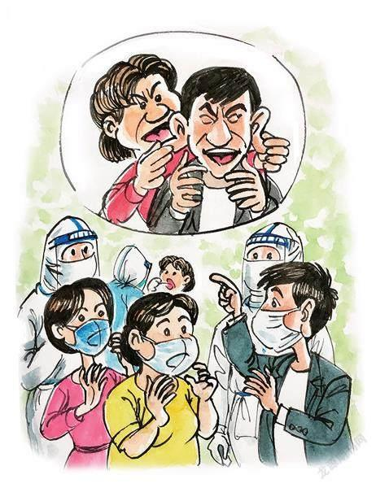
小区做核酸检测，队伍慢慢往前移动。小梦看见，有一个胖姑娘一直在看手机，下台阶时一脚踏空，幸好她身后的瘦小伙伸手把她扶住。那姑娘不但不感謝，还嫌弃地把手甩开。小梦暗自鸣不平：“瘦小伙好心好意，那姑娘什么态度？”这么一想，她多看了瘦小伙几眼。忽然，她发现了什么。
小梦回到家，给妈妈打了视频电话，说：“我发现一个小伙，挺合心意。”
妈妈好奇地问：“你挑男朋友挑了这么多年，都不中意，现在怎么突然有相中的了？”
小梦说：“他长得像我姥爷！”
妈妈瞪大了眼睛：“那我可得看看，小伙在哪儿？”
小梦说：“就在咱小区，刚才遇见的。过两天再做核酸检测，我和你视频，给你‘直播。”
隔两天，小区又开始做核酸检测。小梦特意早早候在现场，一边和妈妈视频，一边急切地等待着。忽然，小梦指着从一号楼走出的瘦小伙，说：“妈妈，就是他！”
小梦偷偷地拍摄着小伙的侧脸，妈妈激动地说：“果然和你姥爷一样，有一对福耳朵！”
姥爷的耳朵又长又大，耳垂格外厚实。大家都说，有福耳朵的男人，疼爱老婆，婚姻美满。姥爷确实和姥姥恩爱了一辈子。
妈妈撺掇小梦快去搭讪。小梦壮了壮胆子，拍拍小伙肩膀。小伙一回头，小梦夸赞道：“你的耳朵长得真有意思，看着很有福气。”
瘦小伙摸着“福耳朵”，苦恼地指着不远处小梦见过的那个胖姑娘，悄悄说：“我家那位是暴脾气，没事就扯我耳朵，而且两个耳朵一起扯，耳垂都扯肿了！”
（发稿编辑：陶云韫）
买草皮¶
黄超鹏
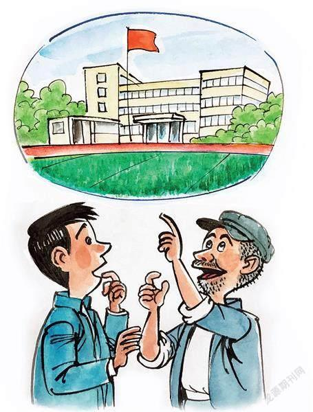
小劉在郊区一所小学当后勤主任。这天，他接到一个任务：学校绿化不达标，被敦促整改。领导要他尽快给学校西边裸露的一块泥地铺上草皮，应对市里的复查。
真草皮可不便宜啊！学校给的经费少得可怜，加上时间又紧，小刘愁得茶饭不思。这天，住农村的父亲老刘来学校看儿子，听说买草皮的事，他探头望了一眼那块地，轻描淡写地说：“这事容易！”
第二天，老刘手里拎着一袋什么东西，冲小刘神秘地笑笑，说：“今天是周末，学校没人吧？走，咱搞草皮去！”小刘看了看那个袋子，又见父亲还带着松土的工具，他惊讶地说：“爹，您该不会要给我种出一片草地吧？”
“你等着瞧吧！”
父子俩到了学校，老刘让儿子帮忙一起给场地松土。小刘边干边嘀咕：“咱这辛苦费问谁要去？”老刘没说话，等把地松完，他当真从袋子里摸出一把把种子，撒了下去……
恰好接下来一段时间天气都不错，还下了两场细雨，种子很快发芽，原本光秃秃的泥地当真变成绿油油的一片。学校领导看到后，都止不住给小刘点赞。
小刘一高兴，特地买了酒回来犒劳父亲：“爹，您这下可立大功了，那些草籽都发芽了！唉，说起来，就是那天太辛苦您喽！”
“不辛苦！”老刘得意地说，“再过一阵子，下酒菜都有了。”
小刘一愣：“什么下酒菜？”
老刘眯着眼笑：“儿子，我那天撒的可不是草籽，而是韭菜种子。等再长高些，割几茬回来炒鸡蛋下酒，别提有多香！其他的割了卖钱，咱也不白干呀！”
（发稿编辑：丁娴瑶）
惊魂电邮¶
锦鳞
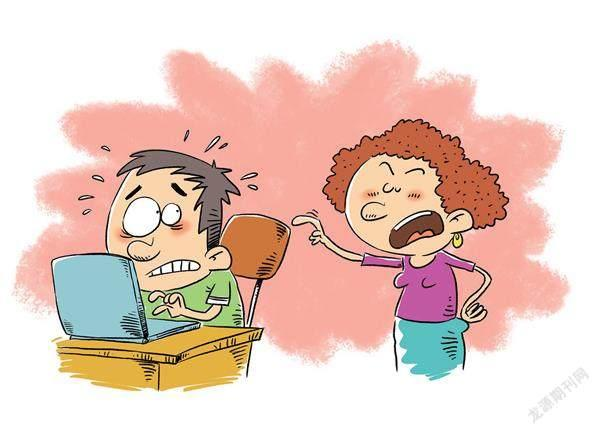
这天一大早，陈松收到一封匿名邮件，打开一看，他傻眼了：对方自称是黑客，说已经入侵陈松的笔记本电脑，掌握了不少他的隐私。要是陈松不想隐私暴露，就得速速转账五万块。
陈松心里一声冷笑，现在的诈骗手段真是层出不穷，这邮件也太会虚张声势了！陈松没把邮件当回事，合上电脑忙别的去了。没想到没过一会儿，第二封邮件到了：“怎么还没动静，是不信我？那我再说点具体的……你是不是浏览过一些不该浏览的网站？”
陈松后背一涼，他的确上过一些“盗版资源”的网站，偶尔也会点开些花里胡哨的小广告……
“电脑杀毒软件弹出的警报，你是不是都懒得管？”糟糕，又中了！只要不影响使用，平时一些弹出的警报，陈松的确懒得理会。
陈松突然有些慌了，他赶紧打开杀毒软件，一条条地排查后台程序，恨不得自己钻进电脑里去看看究竟是谁在捣鬼。
陈松盯着屏幕杀红了眼，哪料想“叮”一声，第三封邮件来了！
“不瞒你说，我已通过摄像头观察你半年了，你家里还有女性吧？如果不想成为‘另类网红，五分钟内转账，不然后果自负！”
陈松彻底蒙了，平时家里就他和老婆两个人，笔记本也是两人共用的，保不齐真被拍到了什么呀！
想到老婆知道这事后崩溃的表情，陈松真的怕了，他一咬牙，赶紧给对方转了账。就在陈松盯着邮箱等回复时，老婆回来了。为了不让老婆担心，陈松只说自己在修电脑，没想到老婆一听来气了：“这破电脑有啥好修的！当初就你图便宜，买个笔记本，还不带摄像头，我早想换了！”
（发稿编辑：丁娴瑶）
最浪漫的事¶
叶卫
老张退休后一直待在家，很少出门聚会活动。毕竟那得花钱啊，而家里的“财政部长”是老伴，老张几乎没啥零花钱。
最近，老张迷上了手机，一天到晚捧着，有时还发出大笑声。老伴见了，揶揄道：“老头子，手机能玩出花来？瞧把你高兴的！”
老张说：“没啥，我就是看到有些视频挺有趣的。”
老伴总觉得老张有点不大对劲儿，心想不会是跟哪个老相好聊上了吧？这天，见老张又对着手机笑瞇眯的，老伴就偷偷走过去，谁知老张一见她就把手机收起来了。老伴想，做贼心虚吧！她故意说：“老头子，我手机太卡，借你手机查个东西。”老张不敢违抗老伴的“命令”，只好将手机递过去。老伴接过手机，偷偷翻了最近的几条聊天记录，确实没啥可疑的，难道是自己多心了？
转眼两个月过去，这天老张问老伴：“今天是什么日子？”老伴说不知道，老张笑道：“瞧你，今天是咱结婚40周年纪念日！”
老伴一拍脑袋：“还真是！老头子，你啥时变浪漫了？”
老张兴奋地说：“这就叫浪漫啦？我还要送你一份神秘礼物呢！”说着，他拨弄了一下手机。
老伴一头雾水：“啥礼物啊？”
“你看手机就知道了。”
老伴打开一看，原来老张发来了一个红包，金额是“5.20”元。
老张乐呵呵地说：“现在有的手机软件看视频能领红包，为了凑足这‘5.20元，给你一份惊喜，这两个多月我每天都盯着手机看视频，眼睛都要瞎啦！”
（发稿编辑：曹晴雯）
盗墓¶
六月的雨
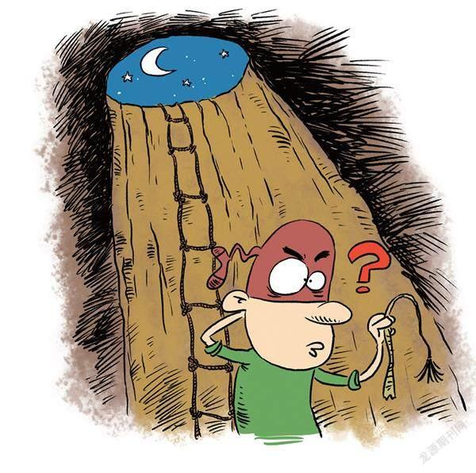
李林整天做着发财梦，听说盗墓能发大财，便也加入了“盗墓”的队伍。
可李林对盗墓了解不多，也没什么技术，无法探明古墓的位置，所以只好没有方向地四处寻找。这犹如大海捞针，自然是一无所获。
后来，李林的父亲得知儿子盗墓的消息，气得骂道：“我们李家先祖好歹是有头有脸的大人物，怎么出了你这么个不争气的后代！”
说者无心，听者有意。李林心中一动，怎么把自家的祖坟给忘了呢？亲戚们一直说，先祖是一位大人物，那墓里一定有许多奇珍异宝！
夜深人静，李林来到祖坟前。他将坟墓炸出一个口子，放下绳梯爬下去。意外的是，先祖的墓穴很简陋，除了一口棺材，别无他物。
李林朝棺材磕了三个响头，然后撬开了棺材，里面除了一具骸骨，只有一根破烂的马鞭。
这算什么宝贝？李林很失望。他拿着马鞭正准备上去，谁知绳梯断了！李林被困在里面，叫天天不应，叫地地不灵。
过了好几天，李林才被村民发现。他已饿得奄奄一息，村民赶紧把他送到了医院。
李林的父亲听说儿子竟然盗挖了自家的祖坟，气得跑到医院要和儿子拼命。
李林不僅不悔改，反而埋怨父亲：“爹，咱家先祖的陪葬物只有一根马鞭，他根本不像你们说的，是什么大人物嘛！”
父亲气鼓鼓地说：“你懂啥？有马鞭就对了！没听说过‘宰相门前七品官吗？咱家先祖虽然是给皇帝牵马赶车的车夫，但三品大员见了都得客客气气的，这身份地位还不高吗？”
（发稿编辑：曹晴雯）
（本栏插图：顾子易 小黑孩）